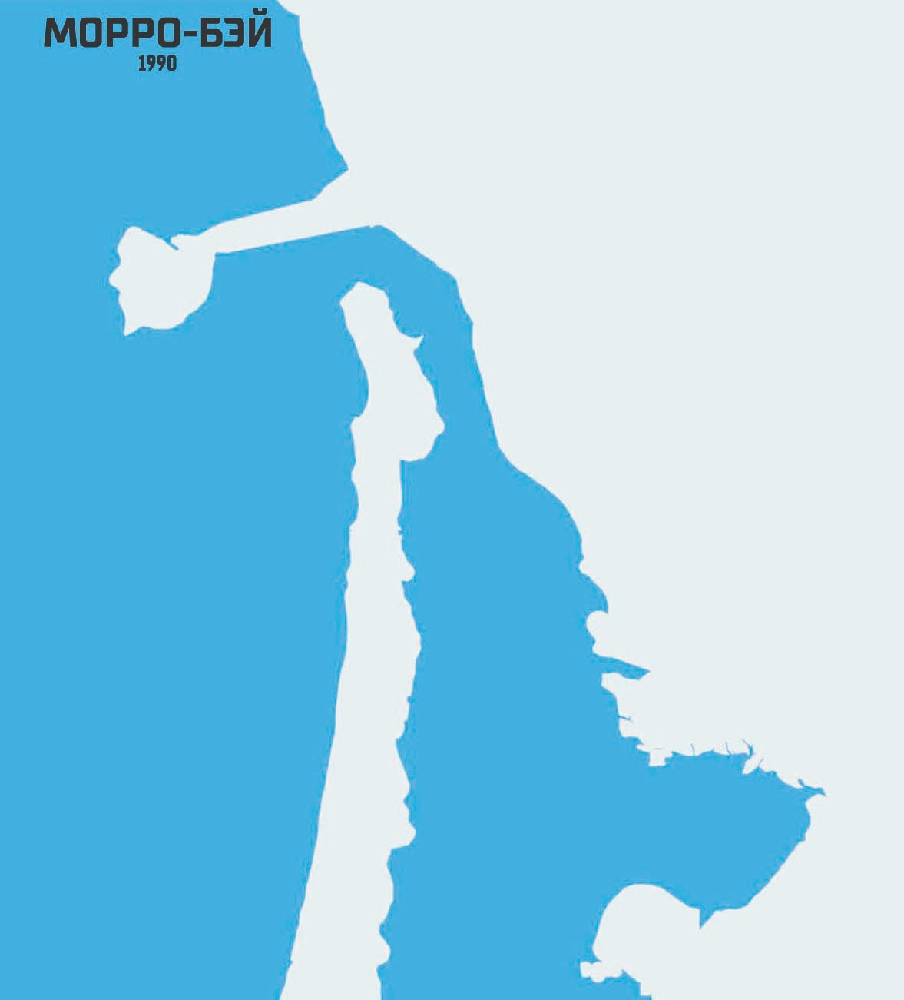
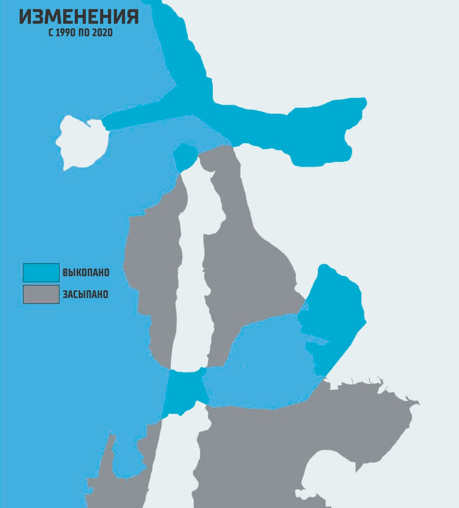
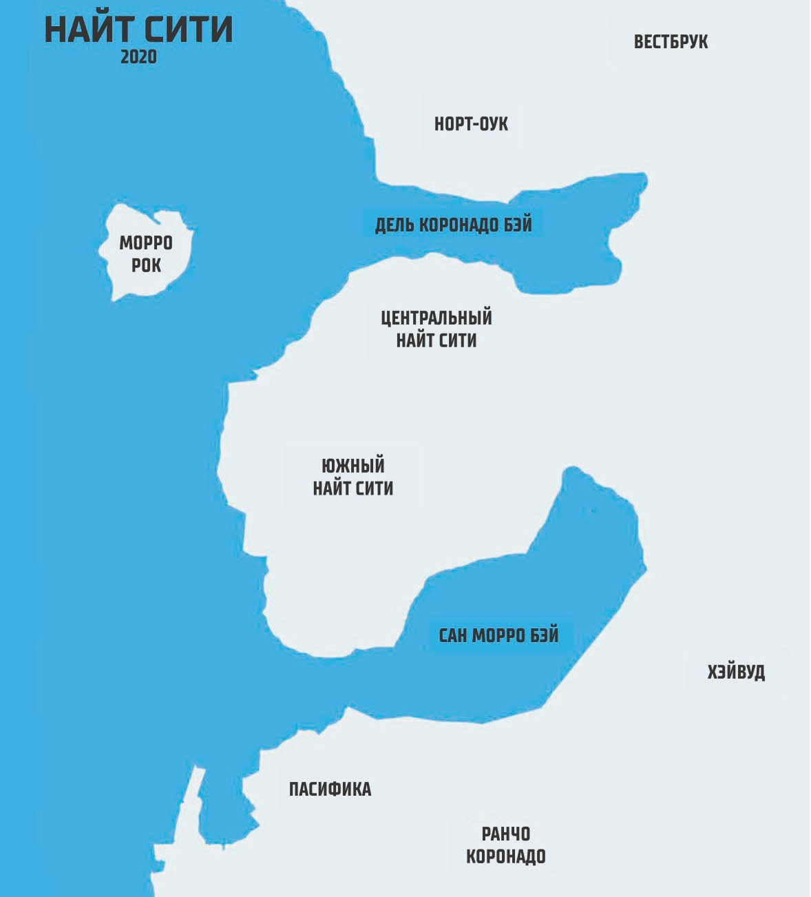
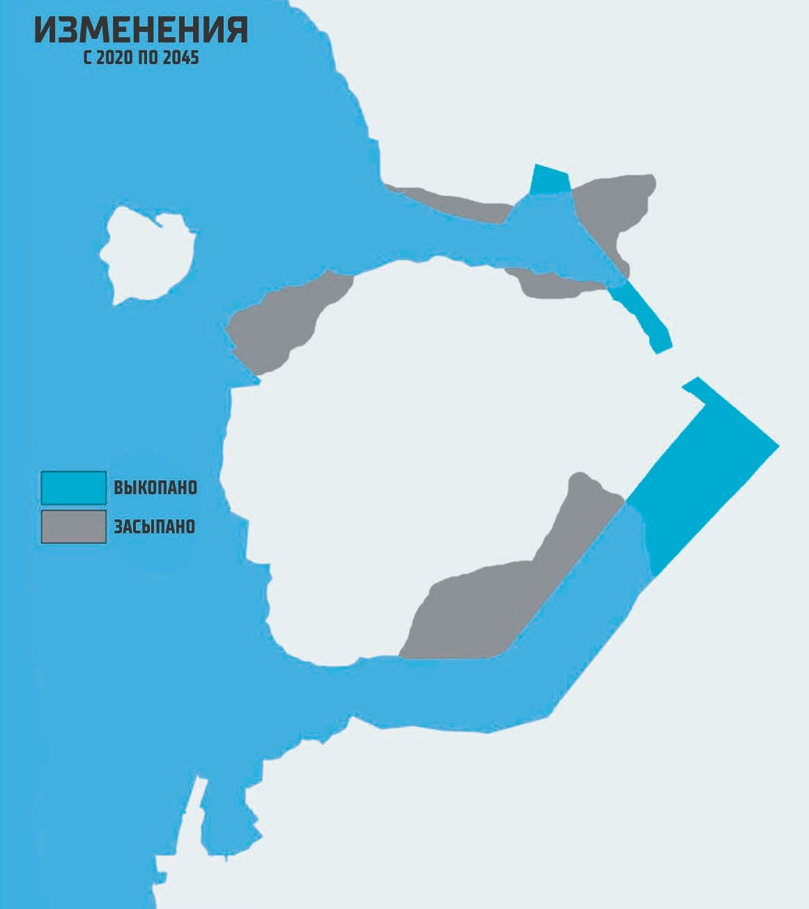

Темное Будущее
Трейс Сантьяго
КАК ВСЁ СТАЛО ТАК ПЛОХО?
Падение Америки
К концу 1980-х годов стало очевидно, что Соединённые Штаты находится в беде. Большинство социальных норм растворилось под волной конкурирующих сторон и групп интересов, разных причуд, подпитываемых средствами массовой информации, и общего мировоззрения "я буду первым".
К 1994 году число бездомных на улицах подскочило до 21 миллиона человек. Техническая революция еще больше расколола экономику, создав два радикально различающихся класса — богатый, технически ориентированный, материально обеспеченный класс корпоративных профессионалов и низший класс бездомных, неквалифицированных людей, "синих воротничков". Средний класс был практически уничтожен. Именно это мрачное начало привело Америку к печальному пейзажу 2000-х годов.
Вот несколько основных трендов приведших американскую нацию к краху.
Городской Коллапс
В крупных городах деловые районы были чистыми, аккуратными, хорошо освещенными витринами, свободными от преступности и нищеты, контролируемыми могущественными корпорациями. Вокруг центральных районов располагались боевые зоны — убогие, грязные пригороды и выжженные гетто, кишащие бустерами и другими жестокими социопатами. Внешние пригороды также были зонами, контролируемыми корпорациями, безопасные, хорошо охраняемые районы, где руководители растили свои семьи в относительной безопасности.
Коррупция и Слабое Правительтво
Под коррумпированным правлением "Банды четырех" (шайка из четырех правительственных агентств: АНБ, ЦРУ, АБН и ФБР, возглавляемых хромированным психопатом вице-президентом) американское правительство скатилось в сферу правления мафиози. Безжалостно преследуя цель незаконной наживы, банда выкорчевала Сошл Секьюрити и Медикэар, ликвидировала Велфар (если только они не были связаны с одним из своих корпоративных клиентов) и разграбила ресурсы Соединенных Штатов, как гигантскую личную копилку. Единственной нетронутой областью правительства были вооруженные силы, на которые Банда тратила деньги для поддержания лояльности военнослужащих и финансирования политики империализма, основанной на войне.
К тому времени, когда Банда была свергнута, Сенат Соединённых Штатов уже перестал функционировать (после многих лет подкупов и запугивания со стороны Банды), Верховный суд перестал быть законом для растущего числа самопровозглашенных Свободных Штатов, а большая часть федеральной бюрократии была разрушена, оставив страну неспособной справиться с волнами кризисов, уничтожающих население.
Расцвет Свободных Штатов
Отдельные штаты, уставшие от неэффективных и диктаторских действий бюрократов в Вашингтоне (и недавно разоблаченных махинаций "Банды четырех"), начали отделяться от основной страны. Сначала Северная Калифорния, и позже южная, затем Техас, Орегон, Вашингтон и Дакота. Эти новые Свободные Штаты устанавливали свои собственные законы (хотя большинство из них были удивительно похожи), торговые соглашения и, что самое важное, больше не отправляли собранные налоги обратно в Вашингтон. Это только ускорило распад единой нации.
Новый Ржавый Котёл
Но вытеснение центра страны повлекло за собой неожиданные издержки: миллионы людей стали бездомными и были вынуждены передвигаться по открытым дорогам в поисках убежища в городских зонах, что стало последней версией "Пыльного Котла" 1930-х годов в Америке. Открытые автострады вскоре стали полем боя, поскольку вооруженные банды бустеров также перемещались из города в город, грабя и насилуя бездомных путешественников, подобно механизированным вестготам.
Не будучи готовыми к последствиям глобального потепления, обширные районы северного полушария начали страдать от бесконечных засух. По всему Среднему Западу многие маленькие города были заброшены, поскольку местные фермы, предприятия и банки рухнули в результате засухи, голода и экономического хаоса.
Те фермы, которые уцелели, в конечном итоге были скуплены огромными агрокорпорациями и поддерживались с помощью скважин, контролируемых корпорациями, наемных рабочих, машинного труда и хорошо оснащенной охраны. Городские зоны Среднего Запада также пострадали в это время, но не от засухи, а от сокращения рабочих мест в промышленности и бегства корпораций из страны в поисках более дешевой рабочей силы в Азии и Африке. Бесконтрольные корпоративные слияния и поглощения дестабилизировали целые области производства, особенно когда богатые инвесторы покупали успешные компании, затем грабили их активы и продавали сухую шелуху за гроши, чтобы рефинансировать свои долги.
Пандемии
Итак перегруженная медицинская система оказалась наводнена пандемиями, охватившими планету. Благодаря доступному и быстрому межконтинентальному транспорту, плотной застройке городов, а также умышленной тенденции правительств того времени игнорировать или преуменьшать последствия чрезвычайных медицинских ситуаций, котлы инфекции распространялись подобно термоядерным взрывам, опустошая целые континенты. Например, Чума Истощения 1999 года, ужасная инфекция, которая поражала кишечник своих жертв и заставляла их умирать от голода независимо от количества съеденной пищи, пронеслась через всю Европу и попала в Соединенные Штаты, где, игнорируемая в хаосе правления "Банды четырех", она убила примерно 14 миллионов человек, прежде чем в Японии наконец была разработана вакцина. Чума Истощения была лишь одной из целой серии эпидемиологических катастроф, обрушившихся на планету, некоторые из которых были естественными, а некоторые — биооружием в рамках различных национальных программ. Каждая из них была лишь очередным гвоздем в гроб общества, уже вышедшего из-под контроля.
Становление Кибернетики
Человечество всегда преодолевало свои проблемы, расширяя границы возможного. Плохое зрение? Купите очки. Ухудшился слух или не вообще слышите? Установите кохлеарный имплант. Вышел из строя тазобедренный сустав? Замените его на стальной. Но к концу 20-го века взрывные достижения в области кибернетики (от cyber = машина + netics = управление) открыли новый мир человеческого потенциала. Теперь стало возможным: Плохое зрение? Замените эти мясные глаза на кибероптические, которые могут видеть на много миль в темноте и даже стрелять лазером, как супергерой. Плохо слышите? Пора переходить на улучшенный аудиокомплекс, способный распознавать звуки, которые могут услышать только собаки или киты. Сломался тазобедренный сустав? Замените весь свой скелет на нерушимую, никогда не изнашивающуюся сталь. Это новый век, и вы можете стать его частью, бесконечно совершенствуя себя.
Но этот смелый новый мир имел обратную сторону. Корпорации и правительства начали нанимать кибернетически усовершенствованных вояк для патрулирования улиц и ведения войн. Люди с кибернетическими улучшениями стали проявлять нетерпение по отношению к людям без улучшений и их (для кибернетически улучшенных) болезненно медленному телу. Кибернетический рост также позволил ускорить темп изменений — или вовлечь в стремительно меняющийся мир бесконечной информации — что привело к повышению уровня техношока (см. ниже) в обществе. У людей стали появляться признаки психических расстройств, которые в конечном итоге вылились в чуму кибернетически-управляемых убийств, названную киберпсихозом. Таким образом, в конце 20-го века в костёр, поглощающий общество, было добавлено еще одно полено.
Постоянные Войны
Имея возможность развернуть кибернетически усиленных суперсолдат и неограниченный военный бюджет, "банда четырех" смогла начать серию войн вне страны, чтобы ознаменовать новую эру империализма. Но даже с этими преимуществами Соединенные Штаты оказались втянуты в серию военных трясин, в которых слышались отголоски советских войск в Афганистане и старой войны США во Вьетнаме. Все стало еще хуже, когда страны-мишени начали использовать террористические удары (например, тактическую ядерную бомбу в Нью-Йорке), чтобы нанести ответный удар по Банде. К тому времени, когда "Десять тысяч киберсолдат" отвоевали свой путь из южноамериканской дыры, граждане Соединенных Штатов конкретно устали от бесконечного инфополя про сражения и войны, заполнивших их вечерние новости.
Ну и наконец Техношок
Когда технологические изменения опережают способность людей воспринимать их или вписать в свою жизнь, возникает техношок — один из основных факторов социального коллапса, который привел к падению мира до киберпанка. Техношок всегда начинается с малого. Полезный гаджет или инструмент — тут. Новый направленный метод связи — там. Информационные системы, позволяющие правительствам и мегакорпорациям следить за вашей жизнью, отслеживать вас с помощью устройств или таргетированной рекламы, которая показывает то, что вы хотите, когда вы даже не знаете, что хотите этого... для вашего же блага. Машины, которые подстраивают ваше ощущение времени и места под ваши нужды. И все это происходит все быстрее и быстрее, так что ваш разум не успевает обрабатывать изменения и то, как они на него влияют. Чем вы моложе, тем легче вам справляться с ускоряющимися изменениями. Вы адаптированы к ним, потому что родились среди них. Но рано или поздно даже дети не могут за этим угнаться. Внезапно люди выходят из себя. Они становятся иррациональными, жестокими. Семьи рушатся, отношения рвутся на части. Люди чувствуют себя беспомощными перед лицом Вселенной. В конце концов, все общество останавливается, становясь жертвой массового психоза. Подавляющее большинство людей, чья жизнь была вывернута на изнанку и изменена достижениями прогресса, сидели в пассивном ожидании, пока их лидеры скажут им, что делать дальше. Мегакорпорации предложили неофеодальную альтернативу новой и непонятной реальности. Одна небольшая группа попыталась сбавить темп технического прогресса, основав антитехнологическое движение неолуддитов. Другие решили погрузиться в технологические перемены. Они справлялись, добавляя к себе части машин, улучшая свои способности и восприятие, чтобы успеть за головокружительным темпом всего "Нового".
Они получили прозвище "Эджраннеры" или "Киберпанки".
Отсчет до Темного Будущего
Таймлайн Тёмного Будущего
1990 - 2045
1990 - 1998
1990 - 1993
- Тайный "переворот", начатый Бандой Четырех, коалицией правительственных учреждений во главе с нынешним вицепрезидентом, фактически положил конец федеральной демократии в США. Многие штаты начинают игнорировать федеральную власть, провозглашая себя "Свободными штатами".
- Начало первого Центральноамериканского конфликта . Американские имперские амбиции, оправданные как часть войны с коммунизмом, терроризмом и наркотиками, убивают сотни тысяч людей. Американские ветераны возвращаются домой расчлененными и искалеченными, что стимулирует спрос на киберимпланты.
- Распад советского союза . С этого момента старый СССР начинает новую эру сближения с Западной Европой; к 2000-м годам "неосоветы" становятся самыми мощными союзниками Евротеатра.
- Агентство EuroSpace запускает космический самолет Hermes.
- Биотехника разрабатывает CHOOH2.
- Первая арка построена на руинах Джерси-Сити. 16 арок начинают строиться в течение следующих 5 лет, вплоть до краха 1996 года, оставляя огромные сооружения полуразрушенными, заполненными сквоттерами и бездомными.
- Договором 1992 года учреждается Европейское экономическое сообщество. Создается единая валютная единица (евродоллар).
- Агентство по борьбе с наркотиками США (АБН) разрабатывает и распространяет по всему миру несколько вирусов, убивающих растения коки и опиума. Правительства Чили, Эквадора и Афганистана объявляют дефолт.
- Жестокая война между дилерами из ЕвроКорп и АБН по всей Америке.
- Первое использование высокоэнергетических лазерных ускорителей масс. Простой ускоритель установлен на Канарских островах агентством ЕвроСпейс.
- Первые микросхемы биоинтерфейса TRC разработаны в Мюнхене, Объединенная Германия.
- Создан аэродин AV-4 для борьбы с участившимися беспорядками в городских районах США.
- В отместку за нападения США на Боготу колумбийские наркобароны взрывают небольшое тактическое ядерное устройство в Нью-Йорке. 15 000 убитых.
1994 - 1995
- Обвал мирового фондового рынка 94-го года . США пойманы на манипулировании европейскими и американскими фондовыми рынками. В результате обнародования происходит мировой финансовый крах.
- США, Европейское сообщество и неосоветские страны начинают новую космическую гонку, стремясь получить экономические и военные преимущества друг перед другом.
- Начинается строительство ускорителя масс на Килиманджаро в рамках совместного соглашения между Европейским космическим агентством (ЕКА) и Панафриканским альянсом.
1996
- Распад Соединенных Штатов . Ослабленные потерями в результате мирового фондового краха, перегруженные безработицей, бездомными и коррупцией, многие местные правительства разваливаются или становятся банкротами. Правительство США, увязшее в огромном дефиците и махинациях "Банды Четырех", становится абсолютно неэффективным.
- Бунты кочевников . К этому времени каждый четвертый американец является бездомным. Сотни тысяч людей по всему США бастуют в надежде получить жилплощадь, стаи кочевников возникают на западном побережье и быстро распростра-няются по всей стране.
- Первое упоминание банд бустеров.
- Действие Конституции США приостановлено. В США введено военное положение.
1997 - 1998
- Ядерные взрывы на Ближнем Востоке . Локальная термоядерная война уничтожает большую часть Ближнего Востока, радиоактивные осадки распространяются по всему миру. Мировые поставки нефти сокращаются вдвое.
- "Рокербой" Мэнсон убит в Англии . Легендарная сила распространения "популистского рока". Его сценическое имя было принято в качестве термина для любого музыканта или другого артиста, который взял в руки молот для политических изменений.
- Засуха 98-го года превращает большую часть Среднего Запада в пересохшие луга. В результате действий аграрных Корпораций и засухи семейные фермы практически исчезают.
- Землетрясение силой 10,5 баллов сотрясает Лос-Анджелес. Тихий океан затопляет 35% города. По оценкам, погибло 65 000 человек.
1999 - 2010
1999
- Начинают появляться культы миллениалов, предсказывающие апокалипсис 1 января 2000 года. Тысячи людей переселяются в изолированные коммуны и храмы, чтобы "ждать конца".
- Основана колония Тихо. Построен ускоритель для обеспечения сырьем орбитальных платформ.
2000
- 1 января культы миллиниалов разражаются оргией самоубийств и насилия, большинство из них уничтожают сами себя.
- Первые упоминания банд позеров "расширенной семьи".
- Запуск космической станции "Кристалл Палас" на Н-1.
- Чума истощения поражает США и Европу, убивая миллионы людей.
2001
- С созданием сети WorldSat окончательно утвердилась основа СЕТи.
2002
- Продовольственная катастрофа . Мутировавший вирус уничтожает урожай в Канаде и Нео-Советском Союзе. Урожаи американского агробизнеса выживают благодаря новому биологическому агенту. Нео-Советы обвиняют США в биологической войне.
- ТРЕЙС САНТЬЯГО
2003
- Вторая Центральноамериканская война . США вторгаются в Колумбию, Эквадор, Перу, Венесуэлу. Война оборачивается катастрофой, которая стоит многим американцам жизни и оставляет тысячи солдат в одиночестве бороться за возвращение домой.
- Звезда "Всемирной службы новостей" Тесла Йоханнессон раскрывает секретные данные АНБ о первом конфликте в Центральной Америке.
- Остатки "Банды четырех" сметаются волной реформ. Выборы возобновляются, хотя и под сильным влиянием Мегакорпораций.
2004
- Первый рост клонированных тканей в пробирке. Разработаны микрошвы, стерилизующие поля.
- Тесла Йоханнессон убит в Каире.
- Первая корпоративная война (2004-2006) . Рейды коммандос и киберпространственные атаки между ЕБМ и Орбитал Эир вводят мир в эпоху прямой корпоративной войны.
2005
- Изобретён Кибермодем
2006
- Первый клон человека, выращенный в пробирке. Без сознания он живет всего 6 часов.
2007
- Брейнданс изобретён в Калифорнийском университете
2008
- Вторая корпоративная война (2008-2010гг.) СовОил и Петрохем не смогли договориться о недавно открытых месторождениях нефти в Южно-Китайском море и начали взрывать друг друга. Даже циничные наблюдатели шокированы уровнем насилия.
- Нападение США на Российскую оружейную платформу Мир XIII. Вмешивается Европейское космическое агентство, и начинается орбитальная война между "евро" и "янки", пока ускоритель колонии Тихо не сбрасывает двухтонный камень на Колорадо-Спрингс. Достигается тяжелый мир.
2009
- Корпорации искореняют власть мафии в Найт-Сити.
- Неудачная попытка захвата американской "группой треррористов" строительства Хрустального дворца. ЕКА обнаруживает Следы Разведывательного управления Министерства обороны США и в качестве предупреждения сбрасывает пятитонную скалу у побережья Вашингтона.
2010
- "Нетворк 54" контролирует 62% всего медиавещания в США.
- Клоны людей теперь жизнеспособны, но нет технологии, чтобы вживлять в них личность или интеллект. В основном они используются для изготовления частей тела для сверхбогатых людей.
2011 - 2025
2011
- Кристальный дворец завершен. ЕКА теперь имеет перманентное влияние в зоне высокой орбиты.
- Миссия ЕКАи Советского Союза достигает Марса. После посадки миссия закрывается, и Марс оказывается заброшенным на десятилетие.
2013
- 13 апреля 2013 года . Концерт Джонни Сильверхэнда перерастает в беспорядки в Найт-Сити. Участники беспорядков убивают 18 человек 51 ранен. Старый комплекс Арасака уничтожен.
- Разработан вирус Душегуб . Первоначально он был разработан программистом Альтьерой Каннингем из АйТиЭс как способ имплантации записанных личностей в клонированные тела Технология пересадки оказалась неудачной, но шпионы Арасаки узнают о его существовании и похищают Каннингем, чтобы заставить ее переделать Душегуб в оружие.
- Сетевой Дозор, ранее бывший частной организацией, создается по всему миру в соответствии с совместным договором США и Евротеатра.
- Первый настоящий ИИ разработан на предприятии Микротех в Саннивейле, Калифорния.
2014
- В СЕТь загружается протокол Ихара-Грабб (И-Г). В это время ренегат-Нетраннер Рейч Бартмосс закладывает вирус ДатаКраш в архитектуру СЕТи.
2016
- Третья корпоративная война (2016) . Неизвестные кибертеррористы атакуют сети корпораций по всему миру, причиняя убытки на миллиарды €$.
2020
- Углеродная чума . В результате аварии корпоративного AV на окраине Найт-Сити высвобождается нанотехнологическая чума. Эпидемия выкашивает город в течение двух недель, а затем таинственным образом исчезает.
- Начат проект восстановления Чикаго. Проект, финансируемый дальновидным доктором Ричардом Стормом из Сторм Технолоджис, объединяет группы кочевников под знаменами семей Альдекальдо и Джоде.
2021
- Морская ЕвроКорпа CINO пытается выкупить обанкротившуюся Марскую Корпу IHAG. Их конкурент OTEC пытается выступить в роли "белого рыцаря" при враждебном поглощении. По мере того как обе корпы подбирают себе союзников, начинается опасная война как на поверхности, так и под водой.
2022
- Тайные операции расширяются, поскольку Арасака и Militech ведут борьбу за то, кто будет контролировать исход войны CINO/OTEC.
- Рэйч Бартмосс, величайший Нетраннер, убит во время рейда Корпорации. Две недели спустя происходит активация вируса ДатаКраш из-за его смерти.
- 4-я Корпоративная война . Тайные операции перерастают в открытую войну, когда Арасака и Милитех вводят в бой передовые войска. Последовавший конфликт включает в себя глобальные операции, с тяжелыми боями в крупных городах по всему миру.
- Проект восстановления Чикаго провалился, из-за взрывов бактериалогического оружия Арасакой в попытках выгнать из города Милитех.
- Вирус ДатаКраш заразил уже 78,2% СЕТи. Осознавая потенциал вируса, Сабуро Арасака приступает к созданию безопасной базы данных незараженных знаний в новом комплексе Arasaka Towers в Найт-Сити.
- Семичасовая война . Устав от боевых действий, хайрайдеры на О'Ниле-2 объявляют независимость, используя дельталеты и списанные ускорители масс, сбрасывают десятки лунных камней и других "артиллерийских" снарядов на ключевые объекты по всей планете, вызывая массовые смерти и разрушения. США и Япония официально признают новое правительство.
2023
- Полный развал международной экономики и торговли. Контейнерные и воздушные перевозки полностью прекращены. Припасы и продовольствие стоят в доках по всему миру, не имея возможности добраться до магазинов, заводов или поставщиков. Многие Мегакорпорации полностью разрушены.
- 20 августа 2023 года: Геноцид в Найт Сити . Команда вторжения под руководством Соло Моргана Блэкхэнда и Рокербоя Джонни Сильверхэнда пытается украсть и уничтожить базу данных Арасака Секьюр Датабейз в комплексе Арасака Тауэрс. Во время штурма взрывается ядерное устройство, уничтожающее большую часть центра Найт-Сити. Более полумиллиона человек погибает, и еще четверть миллиона погибает в результате последствий. Президент США Элизабет Кресс национализирует компанию Милитех, восстановив в должности генерального директора генерала Дональда Ланди.
- Начало Красного Времени . Атмосферные частицы от ядерного взрыва в Найт-Сити, а также обломки от ударов орбитальной артиллерии, обычная взрывчатка, сжигание и уничтожение городов и сельскохозяйственных территорий в военное время создают жуткую красную дымку на небе по всему миру. В течение почти двух лет небо окрашивается в кроваво-красный цвет, который в конце концов сходит на нет, превращаясь в яркие красные восходы и закаты в течение следующего десятилетия.
2025
- Конец 4-й корпоративной войны . Включает в себя трехлетнее подведение итогов, когда очаги боевых действий были подавлены национальной армией с помощью боевых групп Милитех. Хотя за время войны была подорвана только одна ядерная бомба, мировая инфраструктура очень серьезно пострадала, хотя и не была разрушена.
- СЕТь официально не отключена. Альт Каннингем основывает Призрачный мир в руинах разрушенного биологическим оружием города.
- Японское правительство практически перестало существовать. Отречение от Арасаки спасает лицо страны на мировой арене. На следующее десятилетие Арасака становится корпорацией только для Японии. Европейский Союз активно восстанавливается.
2026 - 2035
2026 - 2030
- Начало Диаспоры . Группы переселенцев из разрушенных городов отправляются отвоевывать соседние города, покинутые после краха 1990-х годов. Их поддерживают кочевники, которые организуют конвои между городами.
- Происходит массовое разграбление старых технологий и заброшенных складов. Функционирую исключительно разрозненные Корпорации и только на очень узкой основе. Местные предприятия вынуждены работать на износ, часто используя ресурсы, награбленные на заброшенных предприятиях Мегакорпораций.
- Очень ограниченное использование VPN в корпоративных парках. ИИ иногда проникают в старые сети разрушенных городов в поисках других Искинов, чтобы присоединить их к Призрачному миру.
- Арасака распадается на три враждующие фракции: Кидзи 雉 (Зеленый фазан), возглавляемая Ханако Арасака; Хато 鳩 (Голубь), возглавляемая сторонниками Мичико Арасака, младшей дочери Кея, которая, будучи гражданкой США, вместо этого заключила союз с новым правительством США; Така 鷹 (Ястреб), возглавляемая мятежным сыном Сабуро - Йоринобу.
- Оставшиеся Соединенные Штаты теперь являются функциональной диктатурой под управлением президента Элизабет Кресс, находящейся на чрезвычайном положении.
2030 - 2035
- Переселение пригородных районов Найт-Сити. Со временем Центральный Найт-Сити будет отстроен заново, но пока предгорья и небольшие города вокруг Найт-Сити переполнены беженцами, эвакуированных из радиоактивных руин Корпоративной Зоны.
- Восстановление магистралей кочевников . Кочевники управляют портами, контейнерными судами. Корпорации теперь в основном локальные, но по мере того, как Кочевники налаживают торговые пути, корпорации пускают ветки по регионам.
- Начало СитиНет , локальных VPN, созданных в некоторых восстановленных городах. Эти сети обычно беспроводные, с ограниченным (и строго контролируемым) доступом между ними. Сетевой Дозор контролирует развитие этой новой серии сетей при поддержке корпорации.
- Как и в случае с Элвисом, возникают слухи о том, что тело рокербоя Джонни Сильверхэнда хранится в холодильнике в банке тел в обломках Старого Найт-Сити. Хотя это так и не подтвердилось, утверждается, что тело хранилось там его поклонником, который извлек его из эпицентра взрыва в башнях Арасаки.
- Начало реконструкции Найт-Сити . Гигатонны мусора вывозятся из радиоактивных руин центрального Сити. Большая часть старого залива засыпана.
2035 - 2045
- Города первой волны начинают восстановление при поддержке местных правительств и оставшихся Мегакорпораций. Города первой волны — это города, для восстановления которых требуется ограниченный объём ресурсов.
- "У нас нет Соединенных Штатов, пока у нас вновь не будет страны". — Президент Элизабет Кресс. В то время какместные выборы возобновляются, национальных выборов не будет, пока не будет заключен договор между Свободными Штатами и остающимися Соединенными Штатами.
- Восстановление старых заводов корпорациями и другими частниками начинает заменять утраченные технологии. Новые Корпы возникают из обломков 4-й Корпоративной войны.
- Ходят слухи, что легендарный Соло Морган Блэкхэнд был замечен в различных городах Первой волны.
- Сетевой Дозор пытается очистить Р.Э.Б.И.Д.С. и восстановить Старую СЕТь. После проигранной трехлетней битвы они сдаются и закрывают все основные узлы в Старой СЕТи (хотя некоторые нетраннеры все еще пытаются попасть туда, чтобы разграбить заброшенные системы).
- Создание первых Дата Пулов, информационных серверов и систем обмена данными, предназначенных для открытого использования в пределах города. Дата Пулы производят бесплатный, открытый контент, созданный совместными усилиями сообщества пользователей. По своему дизайну они похожи на систему страниц гиперстека, которую пытались создать, а затем забросили для СЕТи в начале 90-х годов.
- Возникновение первых Мега Башен для обслуживания населения, лишенного жилья. Это ковчеги по системе "все в одном", разработанные для быстрого создания безопасных, пригодныхдля жизни зон.
- Начало работы первых новых фабрик, заменяющих, модернизирующих или ремонтирующих старые и утраченные технологии.
2045
- Наше время.
— ЛИЛАЙА
До того, как все стало красным
Разрушенный мир 2020 года
Объединённая Европа
В хаотичном мире 2020-х годов объединенная Европа представляла собой наилучшее отображение нового века. Хотя некоторые страны Евроблока (Греция, части Центральной Европы и Великобритания) отставали от наиболее успешных государств (Германия, Франция, Италия, скандинавские страны), страны континента были в целом стабильными, относительно процветающими и управляемыми корпорациями. Некоторое неравенство присутствовало, но в повседневной жизни, в отличие от американских коллег, гражданин Европы мог рассчитывать на регулярное питание, чистый воздух и воду, а также на обычную (если не скучную) работу. Над головой была крыша, а преступность была сведена к минимуму.
В некотором смысле Объединенная Европа была похожа на корпоративный Беавервиль: безопасный, контролируемый Корпами, и немного скучный, пока вы не добирались до мест, где жили богатые и влиятельные люди.
Реванш России
В Российской политике начала 2000-х годов доминировала НовоСоветская партия (НСП) после того, как в результате всеобщих выборов 1999 года была свергнута некомпетентная Российская Федерация, созданная при Горбореве. С тех пор НСП является единственной правящей партией, контролирующей правительство. Советские экономические и социальные реформы доминировали над большинством населения под руководством Центрального органа ротационного совета клептократов, контролировавших основные "государственные" отрасли. Медиум Лайл Томпсон однажды описал НСП как "капиталистическо-крониальную клептократию, с которой снята красивая блестящая демократическая оболочка".
Господствующая Азия
В то время как остальной мир боролся с разрушительными последствиями конца 20-го века, страны Азии были хорошо подготовлены к превратностям изменения климата и деградации окружающей среды. Китай, Япония и Корея быстро смекнули, что сжигание угля и нефти слишком дорогое, чтобы продолжать строить свою экспансию на их основе, и вместо этого перешли к созданию обширных полей океанических водорослей, которые легко перерабатывались в CHOOH2 в Соединенных Штатах. Этот квантовый сдвиг также обеспечил больше пищи для плотного населения азиатских стран, хотя сильные (некоторые говорят, драконовские) программы контроля рождаемости в некоторых странах также помогли сократить переизбыток населения. Переполненные и кишащие людьми города Японии, Китая, Кореи и Филиппин смогли обеспечить высокий уровень продовольственного насыщения, безопасности и комфорта, даже если многим из людей не хватало личной свободы, характерной для других стран.
Ядерные Взрывы на Ближнем Востоке
В результате взрывов 90-х годов огромные территории Ирана, Ливии, Ирака, Чада и Арабских Эмиратов превратились в радиоактивные стеклянные поля. Только Египет, Сирия и Израиль уцелели. В 2020-х годах только мусорщики и отчаявшиеся люди заходили в очаги, чтобы найти оборудование и ценности среди светящихся руин.
Афротуризм и Высокий Рубеж
Некогда раздробленный континент, состоящий из враждующих стран, где сменяли друг друга диктаторы, демократии и социалистические государства, возродился снова, когда многочисленные государства Центральной Африки объединились для переговоров с Евронациями, которые хотели построить ускоритель масс на Килиманджаро. По мере роста авторитета государств Центральной Африки к Панафриканскому альянсу присоединялисьдругие страны континента.
Панафриканский альянс создал самый прочный из всех плацдармов в космосе — почти треть всех космических строителей были африканцами, а большинство космопортов и строительных площадок были построены на африканской земле. В результате население превратилось в национальную группу под названием Хайрайдеры — космическое высокотехнологичное общество, связанное панафриканскими корнями и желанием никогда больше не вернуться к статусу жерты колониального угнетения.
Центральная и Южная Америка
После нескольких продолжительных войн с США Центральная Америка превратилась в союз сильных независимых государств, работающих по договору о взаимном сотрудничестве. США были изгнаны из всех стран, кроме зоны Панамского канала (которую они до сих пор удерживают с помощью военной силы, отбиваясь от продолжающихся партизанских набегов).
В Южной Америке Аргентина, Чили и Бразилия стали дефакто лидерами Организации американских государств, выгнав США после их расжигания Южноамериканских войн. ОАГ получило свое место в качестве крупной мировой державы, на уровне Европейского Союза.
Америка: падение орла
Международный Пожар
В конце ХХ века ряд экологических катастроф нанес огромный ущерб инфраструктуре США. Глобальное потепление растопило большую часть полярных ледников, что привело к повышению уровня моря. Огромная часть Восточного побережья и Юга ушла под воду или частично превратилась в болотистую местность. То, что осталось от Нового Орлеана, стояло на сваях, а в Хьюстоне мгновенно выросла популяция аллигаторов. Повышение температуры привело к оттаиванию обширной территории южной Аляски, северной Канады и верхней части США. Эти районы стали новыми житницами, на которых появились зеленеющие поля биоинженерного "ядра выживания", ставшего основой значительной части экономики США. Однако, те же изменения климата иссушили еще больше территорий, чем спасли. На Великих равнинах и Юго-Западе целые регионы превратились в пустыню всего за несколько лет. Не имея препятствий в виде древесного покрова, сильные ветры вздымали землю, устраивая песчаные бури. Тихоокеанский северо-запад в течение двадцати лет страдал от засухи и нехватки воды. Это, в свою очередь, вызвало повсеместные лесные пожары, которые пронеслись по высушенным добела лесам, окутав весь Запад густым серым дымом.
Пылевой АД
В местах от Сиэтла до Сан-Франциско и Сан-Диего главной проблемой стала вода: сколько, кому она принадлежит и где ее взять. В Лос-Анджелесе смещающиеся океанические течения отводили осадки от центрального побережья, в результате плотные приземные туманы смешивались со смогом, создавая кислотный, ядовитый суп над бассейном Лос-Анджелеса. Всего в шестидесяти милях от него то же самое смещающееся течение превратило Сан-Диего в пустынный город. Найт-Сити, расположенный на границе между Северной Калифорнией и Южной Калифорнией, получил смесь всего: знойное сухое лето и прохладную сухую зиму, сменяющуюся периодическими кислотными ливнями и удушливым ядовитым смогом. Еще хуже обстояли дела на востоке, поскольку дожди больше не доходили до внутренних районов Великих равнин. Эти районы, за исключением тех, которые поддерживались компанией Петрохем для огромных полей модифицированной кукурузы и пшеницы для переработки CHOOH2, превратились в бесплодные пыльные земли, сравнимые с теми, что появились в конце 1930-х годов.
Грязь, Трясина и Зоны Мёртвых Морей
Небрежный контроль за состоянием окружающей среды во второй половине 20-го века оставил в Америке неизгладимые экологические шрамы. Массивные штормы кислотных дождей обрушились на Средний Запад, отравляя питьевую воду и урожай. Целых два региона Восточного побережья были превращены в пустоши, поскольку энергетические компании бросили ядерные реакторы во время коллапса и допустили утечку их содержимого в водоемы. В результате неудачных "камнепадов" лунных ускорителей масс во время первой орбитальной войны были уничтожены Тампа и Колорадо-Спрингс. Взрывы выбросили миллионы тонн пыли и тепла в атмосферу, что сильнее усугубило глобальное потепление. Разливы токсичных веществ на обоих побережьях, сброс медицинских отходов, образовавшихся в результате многолетней Чумы Истощения — все это способствовало резкому вымиранию жизни в океанах, включая морских млекопитающих, пищевую рыбу и фитопланктон, необходимый для восполнения кислорода на Земле.
Опустошающая Чума
Эпидемия СПИДа 1990-х годов переросла в кризис СПИД II в начале 2000-х годов. Проволочки со стороны политиков и научные распри среди исследователей так долго откладывали производство лекарств, что за прошедшие годы болезнь мутировала в более вирулентную форму. Хуже того, Чума Истощения 1999 года всё сильнее уничтожала население, убивая сотни тысяч людей в течение всего нескольких лет, а спустя всего десятилетие последовала недолговечная Углеродная Чума 2020 года, которая действовала исключительно на взрослых, оставила живыми, но осеротевшими многих молодых людей тех годов.
Лос-Анджелесское Потрясение
Финалом десятилетий экологических и социальных катастроф стало землятрясение конца 1999 силой 10,5 баллов в Лос-Анджелесе. Тихий океан накрыл собой 35% города, затопив его. По оценкам, погибло 65 000 человек. Но впереди было еще больше.
Банда Четырех
Во второй половине 20-го века Соединенные Штаты столкнулись с самыми разнообразными внешними и внутренними угрозами. В условиях наступившего хаоса настало время, когда коалиция правительственных агентств, позднее названная журналистом Теслой Йоханнесоном "Бандой четырех", организовала тайный переворот в правительстве Соединенных Штатов, фактически положив конец федеральной демократии в США.
Как позже выяснил Йоханнессон, в состав заговора входили руководители четырех агентств и исполнительной власти во главе с вице-президентом.
Исполнительная Власть
Джеймс Ричард Аллен, президент Соединённых Штатов : говорят, что рыба гниет с головы. Но в данном случае речь шла о том, что голова была отрезана от остальной рыбы задолго до того, как она начала гнить. Президент Соединенных Штатов в первые годы правления "банды четырех" был в целом приятным, обычным парнем, только не очень умным. Им легко манипулировали его вице-президент и Совет национальной безопасности, которые наживались на войне и свержении отдельных южноамериканских правительств.
Харольд Харрисон Хант, вице-президент Соеденённых Штатов : открытый психопат с полным отсутствием каких-либо угрызений совести, "Х.Х." Хант был благосклонен к богатой семейной империи, а также обладал чрезвычайно обаятельной и привлекательной внешностью. Он сумел использовать это в серии коррумпированных крупных сделок по всему миру, сколотив огромное состояние на недвижимости, средствах массовой информации и махинациях с акциями корпораций. Когда некоторые из его европейских партнеров стали плохо себя чувствовать под его руководством, Хант решил сменить передачу и просто захватить США.
Совет Национальной Безопасности
Вице-президент вступил в сговор с АНБ, чтобы свергнуть несколько стран в Южном Амереке с целью расширения влияния США и получения контроля над продовольствием и сырьем (для своих корпоративных клиентов).
Банда привлекла к сотрудничеству Генерального прокурора, чтобы обеспечить обоснование для своих спецопераций, обвинив выбранные страны в поддержке контрабандистов наркотиков (таким образом, привлекая АБН) и внешних преступных/ террористических организаций (привлекая ФБР). Позже в заговор было вовлечено ЦРУ, которое предоставляло разведданные и ресурсы для черных операций в обмен на долю прибыли.
Центральное Развед. Управление
Втянутое в заговор АНБ, ЦРУ в первую очередь было озабочено растущей независимостью стран Южной и Центральной Америки. Поскольку эти страны начали прокладывать свои собственные экономические и торговые пути, они угрожали прибыльным рынкам нескольких мощных Мегакорпораций, базирующихся в США. Кроме того, ЦРУ начало использовать повстанческие террористические группы для дестабилизации враждебных стран и удержания "социалистических сил" под контролем.
Федеральное Бюро Расследований
ФБР использовалось Бандой для поиска и преследования "государственных врагов", а также обеспечивало прослушку, разведку и скрытое наблюдение за объектами по всей территории США. Хотя ФБР было лишь незначительной частью изначального сговора, оно оказалось втянутым в систему, когда Банда начала использовать собственные наемные армии "федеральных агентов" для контроля над непослушными штатами.
Агентство по Борьбе с Наркотиками
Оправдывая вторжение в центральную и западную части Южной Америки (Боливия, Чили), АБН уже давно хотело остановить поток кокаина и других наркотиков, идущих на север к трепетно ожидающей их аудитории американских наркоманов. Кроме того, сотрудники АНБ хотели заручиться благосклонностью фармацевтических Мегакорпораций, жаждущим убрать с дороги южноамериканских наркоторговцев, чтобы наводнить рынок своими искусственными синтетичсекими супернаркотиками.
Загадочная Болезнь
В начале 1991 года по плантациям коки в Южной Америке прокатился мощный биоагент, превративший пышные поля в коричневую и гниющую мякоть. Одновременно с этим похожий биоагент пронесся по маковым полям Центральной Азии, разрушив производство опиума в регионе. Наркобароны двух континентов, экономика которых была практически уничтожена, отправились на поиски виновных.
Как позже выяснил журналист Тесла Йоханнессон, "Банда четырех" была тайно ответственна за выпуск этих биоагентов в рамках долгосрочного плана по дестабилизации правительств нескольких ключевых стран Южной и Центральной Америки (а также значительной части центрального Афганистана) ради собственной выгоды. Чтобы еще больше усложнить ситуацию, в конце 1999 года Йоханнессон обнаружил, что ЦРУ перенаправило часть доходов от незаконной продажи оружия на финансирование групп южноамериканских сепаратистов, пытавшихся свергнуть суверенное правительство Чили и Боливии. Банда поддерживала эти действия, поскольку обе страны располагали огромными запасами лития (Чили = 7,5 млн тонн, Боливия = 9 млн тонн), жизненно важного минерала, используемого для производства электроники, запасы которого в США истощились. Хоть экономика этих стран-производителей наркотиков в значительной степени зависела от доходов от наркокартелей, сам их суверенитет теперь также находился под угрозой.
Но если у стран Южно-Американского континента были только их скудные вооруженные силы, то с наркобаронами афганского высокогорья дело обстояло иначе. Годы борьбы с Советами и другими захватчиками научили их заключать сделки с несколькими влиятельными европейскими политиками, которые, в свою очередь, имели связи в залах заседаний многих крупных правительств. До сих пор не понятно, кто отдавал приказы (а Тесла Йоханнессон был убит до того, как смог выяснить, кто поддерживает афганцев), но как только источником биооружия был найден в лице АНБ, производители наркотиков по обе стороны Атлантики нанесли ответный удар в скоординированных рейдах против США.
Начало Войны с Наркотиками
Вооружившись нужным предлогом, Банда быстро отправила части американской армии на юг, чтобы уничтожить этих "бичей невинных" и "случайно" завладеть землями, на которых они стояли. В ответ на вмешательство США, осажденные южноамериканские НаркоНации начали тяжелую партизанскую войну, которая быстро переросла во вьетнамскую. Афганских наркобаронов никто не трогал, у США в то время не было ресурсов, чтобы вести эту войну на два фронта, а угроза вмешательства Нео-Советов охладила их пыл.
Поначалу казалось, что армия США просто пройдется катком по войскам Южно-Американского Союза, как это было несколько десятилетий назад в зоне Панамского канала. Но Южно-Американские народы отказались сдаваться, начав партизанские атаки по всему континенту США и их сателлитным территориям. Наконец, в отместку за нападения США на Боготу, колумбийские наркобароны взорвали небольшое "карманное" ядерное устройство в финансовом районе Нью-Йорка. Результатом стали 15 000 погибших человек.
Зловеще, но это устройство казалось слишком похожим на устройства, использованные НеоСоветами много лет назад в их неудачной и безуспешной войне против афганцев.
Катастрофа 94-го
В рамках этого плана, руководители ЦРУ тайно продавали американское оружие на черном рынке за деньги, сначала для поддержки подконтрольных им повстанцев, а вскоре для финансирования спекуляций в инвестицях, которые непосредственно обогатили бы членов кабалы. Не имея возможности обратиться за поддержкой к Конгрессу, они "отмывали" деньги через ряд офшорных холдинговых компаний, покупая акции на европейских и азиатских биржевых рынках. Это вызывало подозрения Европейского союза, который после нескольких лет тщательного расследования Интерпола (аналог ФБР в ЕС) официально обвинил правительство США в махинациях с акциями и отмывании денег. Это привело к обвалу мирового фондового рынка в 94-м году и мировому финансовому кризису, вызванному обнародованием этой новости.
Смерть Президента
Во время предвыборной кампании в Калифорнии тогдашний президент Ричард Аллен был убит неизвестными. Некоторые подозревают, что убийца был финансирован корпорацией и работал в интересах вице-президента Ханта. Впоследствии Харольд Харрисон Хант стал президентом и получил полный картбланш на ускоренную реализацию планов "Банды четырех".
Коллапс и Военное Положение
Последующее фиаско США разрушило американскую экономику, оставив миллионы людей без крова, а правительство, за пределами Вашингтона, в свободном падении. Поэтому американские военные были стянуты в США, чтобы установить военное положение и поддерживать порядок среди хаоса и забастовок. По указанию "Банды" военные использовали жестокую и бесчеловечную тактику для восстановления порядка. В одном страшном происшествии, известном, как Хьюстонскй инцидент, военные под руководством "Банды четырех" убили более 2 000 человек артиллерийским огнем, когда те отказались разойтись во время марша по городу, требуя жилья и продовольствия. Во многих американских городах, например, Нью-Йорке, Чикаго и Сан-Франциско, был введен комендантский час, отдан приказ "стрелять на поражение". Правление военных оказалось действительно суровым.
Федеральные силы, тайно набранные из рядов АБН, Службы иммиграции и натурализации, Федеральной тюремной системы, а также военизированные наемники, тайно предоставленные несколькими крупными Мегакорпорациями, также были выставленны на улицы городов по всей территории США. Без опознавательных знаков, эти нерегулярные формирования только усиливали чувство, что правительственные войска превратились в банду головорезов. В результате местные органы власти и их союзники устраивали протесты, а затем контратаковали федеральное вторжение. Всё заканчивалось боями, в которых ополченцы и подразделения Национальной гвардии противостояли военизированным войскам.
Многое из этого прерывалось нескончаемыми катастрофами, происходящими по всей территории Соединенных Штатов: коллапсы, бунты кочевников (тогда известные как бунты бездомных), землетрясение в Лос-Анджелесе и первое появление Чумы Истощения. Но семя восстания уже было посажено, готовое вырасти в густой лес.
Войны за Престолонаследие
По мере того как штаты вступали в конфликт с правительством в Вашингтоне, они начали рассматривать возможность выхода из Соеденённых Штатов. Например, в Нью-Йорке и Техасе, начались экономические забастовки, в ходе которых мятежные штаты отказывались отправлять налоги в Вашингтон. Это переросло в экономическую блокаду, когда штаты прекращали вывоз или ввоз товаров со своих границ в качестве акции против федерального правительства в Вашингтоне.
Тупиковая ситуация настала в 1993 году, когда одна из внезаконных "полицейских сил" Банды жестоко взяла под контроль Сан-Франциско. Это привело к ожесточенной борьбе на улицах между жителями и парамилитарными силами. Губернатор Калифорнии призвал на помощь Национальную гвардию, которая в этой схватке выступила на стороне города. Парамилитаристы, действующие под эгидой федералов, в ответ попытались захватить столицу штата Сакраменто. В итоге штат объявил нынешнюю федеральную администрацию в Вашингтоне не легитимной, заявив о принятии официальных статей об отделении от Соединённых Штатов.
Военные, пожалевшие о поддержке действий "Банды четырех", отказались участвовать в войне за престолонаследие, даже после того, как калифорнийские власти заминировали проходы в восточную часть штата из Невады (шоссе 80 и 15) и Аризоны (шоссе 10 и 40).
В этот момент еще несколько штатов начали игнорировать федеральные власти, объявляя себя "Свободными Штатами". Военные, глядя на приказ Банды о повторном завоевании страны, пожали плечами и ответили: "Эй, Posse Comitatus, детка", и с отвращением отступили на свои базы. Так Свободные Штаты стали свободными.
Возвращение в Юж. Америку
Отчаянно пытаясь вернуть сырье, которое они потеряли в отделившихся штатах, Банда вернулась к планированию войны. На этот раз они создали силы, способные сражаться в джунглях Южной Америки, используя последние достижения в области кибернетики и интерфейсных чипов. Армия, сытая по горло войной с собственными гражданами и ненавидящая идею восстановления военного положения перед лицом Свободных Штатов, была готова подписаться что угодно, хоть еще одну попытку умиротворить страны Южной Америки. Соблазненные обещанием испытать своих новых "кибер-суперсолдат", десять тысяч вояк, многие из которых были в той или иной степени "кибернетизированы", высадились на землю на боевых аэродинах ("AVи" на военном языке) и вступили в жестокую войну с участием наркобаронов, евро- и Нео-Советских наемников и разъяренных местных жителей, которым просто надоело, что "гринго" приезжают на юг, чтобы убивать их.
Поначалу новая война шла хорошо. Но, по мере того, как она шла, как Вьетнам новой эры, остальная часть Соединенных Штатов, не объявившая себя частью Свободных Штатов, начала громко протестовать против того, чтобы Вашингтон вел иностранную войну, когда большая часть страны страдает.
В конце концов, когда медиа-звезда "Всемирной Службы Новостей" Тесла Йоханнессон обнародовал секретные стенограммы АНБ о первом центральноамериканском конфликте, фекалии полетели в вентилятор. Тяжеловооруженные толпы ворвались в Капитолий, поддерживаемые подразделениями вооруженных сил, которые уже были на грани, и наемниками из Мегакорпораций США и Евротеатра. Банда четырех, разоблаченная, бежала. Но их преследовали, и в конце концов даже президент Хант оказался сбит с ног на краю болот Флориды и подожжен ликующей толпой. Остальных участников заговора постигла такая же или еще более худшая участь.
Когда "Банда четырех" была сметена волной реформ, встал вопрос о преемственности президентских полномочий. Поскольку спикер Палаты представителей находился в больнице, а три ближайших преемника отказались от работы, пост президента перешел к министру обороны Джону Стюарду. Что касается войск, отправленных Бандой на завоевание Южной Америки, то их постигла та же участь, что и легендарные десять тысяч Ксенофонта — вдали от дома, без еды, без государства и без союзников. И, как и их собратьям из мировой истории, им предстоял долгий, очень долгий путь через враждебные джунгли и северные пустыни к земле, в которой они никому не были нужны.
Начало Эры Киберпанка
Итак, кибервойны закончились, и Америка хотела исцелиться. Но не все было так плохо. В переполненных мегаполисах, которые заменили множество маленьких городков и пригородов, погибших во время Коллапса, лихорадочный взрыв техно-чудес и стремительный капитализм создали блестящий, сверхмощный мир, в котором доминировали огромные Мегакорпорации, шагавшие по миру как целые нации. Мегакорпорации собирали армии, боролись за международное господство и определяли весь мир вокруг себя, в то время как под сверкающими башнями сверхбогатых людей просачивалось постоянно растущее население обездоленных, голодающих, пытающихся просто выжить дворняг. Единственным уравнителем была технология: массы, оказавшиеся на "улице", использовали киберимланты, оружие и хитрость, чтобы победить своих корпоративных врагов. Их называли Эджраннерами, Киберпанками или просто повстанцами, они были теми, кто противостоял силе мегакорпораций и боролся за победу вопреки всему.
Рассвет мегакорпораций
Силовой Вакуум
С наступлением нового тысячелетия мир все еще был охвачен спазмами хаоса. И поскольку национальные правительства теряли свою легитимность (или контроль, если угодно), стало неизбежным, что кто-то должен был занять их место. И в эту зияющую дыру командования и контроля шагнули самые очевидные (и организованные) группы на планете: растущие Мегакорпорации. Для быстро развивающихся, крупномасштабных компаний с ресурсами и операциями по всему миру логичным шагом было то, что они должны взять власть в свои руки. В конце концов, нестабильное правительство — это плохо для бизнеса.
В первой половине 21 века Мегакорпорации были похожи на международные компании конца 20 века, только гораздо крупнее и более автономны. Они были почти нациями сами по себе, со своими собственными законами, городами, заводами и армиями. Большинство корпораций начала 2000-х годов были многонациональными, с филиалами, действующими по всему миру — некоторые филиалы были маленькими, как исследовательские центры или офисы продаж, а некоторые — огромны, как крупные производственные предприятия и центры безопасности.
Большинство Мегакорпораций были производителями — они создавали товары для продажи на открытом рынке. Нефть, сталь, автомобили, самолеты, оружие, компьютеры, кибернетика, био-технологии — вот лишь некоторые из миллионов товаров корпораций. Многие корпорации имели на рынке несколько видов товаров. Они контролировали химические заводы в Европе, компьютерные фабрики в Японии и сталелитейные предприятия в Соединенных Штатах. Не все Мегакорпорации инвестировали в производство, они также контролировали банковское дело, производство продуктов питания, энергоресурсы и другие ключевые сферы жизни общества.
Одним из видов корпораций, заслуживающих особого внимания, являются корпорации-СМИ. Эти огромные конгломераты выросли из трендов конца 1980-х годов, когда определенные фирмы скупали телевизионные сети, кинокомпании, звукозаписывающие компании, радиостанции, издательства книг, журналов и даже комиксов, фактически централизуя средства массовой информации под контролем малой группы людей. Под властью Медиакорпораций массовые развлечения стали шаблонными и безвкусными. Инакомыслие и независимая журналистика обычно оказывались погребенными под лавиной медийной шумихи. Или, что еще хуже, захваченными или уничтоженными в результате жестокой межкорпоративной конкуренции. Еще хуже было влияние на новости и информацию, когда политики поняли, что правильная связь с правильной Медиакорпой может контролировать электорат — всего лишь маленький шаг к возможности выбирать, упаковывать и продавать свою собственную реальность. Вот так, контроль в руках Медиакорп был необходим для установления и легитимизации роли Мегакорпораций в управлении миром после катастрофы.
Мегакорпорации и Правительства
После катастрофы 94-го года правительства стран мира оказались в неудобном положении, когда им пришлось позволить транснациональным корпорациям делать все, что им заблагорассудится. Придерживаясь на словах правил контроля загрязнения окружающей среды, безопасности продукции и минимальной заработной платы, транснациональные корпорации легко доминировали над местными правительствами с помощью взяток и военной поддержки, а также путем торговли властью, влиянием или деньгами с нужными органами: судьей или начальником полиции, сенатором или конгрессменом. Движимые жадностью и одержимые успехом, мегакорпорации начала 2000х годов затмили все страны, кроме самых могущественных, коррумпируя правительства, меняя политику и даже прибегая к использованию частных армий, когда экономического влияния было недостаточно. К середине 2010-х годов Мегакорпорации практически полностью управляли мировой экономикой и большей частью неэкономического мира, а большинство стран просто замолчали и собирали налоги, которые они могли вымогать у своих соседей, занимающихся крупным бизнесом.
Так было до тех пор, пока корпоративные войны не начали разрушать весь этот уютный порядок.
Когда Корпорации Устраивают Войны
Первые корпоративные войны начинались как битвы за территорию или ресурсы. Однако, поскольку большинство Мегакорпораций уже имели значительные военные силы для защиты своих владений в диком и мягком Пост-Катострофическом мире, было неизбежно, что в конце концов одна или несколько Мегакорпораций начали использовать эти силы для решения межкорпоративных споров, когда адвокатская практика стала неэффективной.
Первая Корпоративная Война
Август 2004 - Февраль 2006
Первая корпоративная война началась достаточно просто: Сделка ЕБМ по выкупу с привлечением заемных средств терпящей крах ТрансВорлд Аирлайнс стала неудобной после того, как их сделка с генеральным директором ТрансВорлд провалилась. Орбитал Эир, с пеной у рта желающая заполучить воздушное сообщение ТВА в США, пришла на помощь ТВА, заблокировав попытку ЕБМ выкупить компанию. ЕБМ нанесла первый удар, отправив террористов похитить переговорную группу ОА, направлявшуюся для заключения сделки с ТВО. Террористы не справились с заданием, и анонимность ЕБМ оказалась под угрозой. Орбитал Эир немедленно приступила к работе, наняв в союзники Зетатех, которая обрушила на ЕБМ мощную волну СЕТевых-атак. Эти атаки, хоть и нанесли ущерб, были быстро подавлены, что заставило Зетатех выйти из войны. ЕБМ ответила волной атак на объекты ТВА и ОА. Орбитал Эир хорошо справилась с поставленной задачей, усилив безопасность и используя свое доминирование на НОО для установления блокады объектов ЕБМ.
В конце концов, Орбитал Эир нанесла ответный удар волной терроризма и пиратства. ЕБМ же ответила на эту угрозу армией корпоративных Соло и прокси-солдат из развивающихся стран. В течение этого периода обе компании меняли союзников как перчатки. Сотни миллионов евродолларов были потрачены впустую, украдены или просто уничтожены, когда обе компании пытались сократить финансирование друг друга. На самом деле, в какой-то момент, обеим сторонам пришлось искать финансовых сторонников, чтобы спасти своих нынешних союзников от уничтожения.
Во время конфликта произошло всего два крупных сражения. Первое произошло, когда коммандос ОА захватили центральную космическую станцию ЕБМ в ответ на такой же крупный захват, совершенный ЕБМ в тот же день. Обе стороны были наказаны Европейским Космическим Агентством, которое сняло все блокировки и предупредило соперников, чтобы они больше не выходили на НОО. Вторая битва произошла только через год, когда коммандос ОА атаковали комплекс генерального директора Ульфа Грюнвальдера в Баварии, захватили его и заставили ЕБМ капитулировать. Последствия этой войны были огромны. Это был первый конфликт такого рода. Но, что еще более важно, она дала другим компаниям зеленый свет на использование военной тактики для достижения благоприятных результатов в бизнесе. Хотя некоторые мелкие фирмы и раньше вступали в мелкие вооруженные стычки, ничто не могло сравниться с жестокостью и масштабами этого конфликта. И казалось, что новый конфликт — лишь вопрос времени.
Вторая Корпоративная Война
Апрель 2008 - Август 2010
Вторая корпоративная война началась с недопонимания между нефтяными гигантами Петрохем и СовОил. Отношения между двумя компаниями начали портиться, когда сделка по слиянию сорвалась в одиннадцатый час переговоров. В результате аварии буровой установки на платформе Петрохем обе компании вступили в конфликт, подобный которому Тихоокеанский регион не видел со времен Второй Мировой Войны.
Хоть изначально СовОйл держал военную инициативу в своих руках, но в течение нескольких недель обе стороны серьезно подорвали нефтяные мощности друг друга. Петрохем упорно сопротивлялась, потратив многие миллионы эдди и тысячи жизней, чтобы получить преимущество. Пиком успеха Петрохем стал неожиданный захват цепи островов Спратли и убийство основателя и генерального директора СовОил Анатолия Новикова. Но этого все равно было недостаточно. СовОил легко отразил последующее наступление Петрохем в октябре 2009 года, обессилив оппонента в Тихом океане. Официальной капитуляции не было, но война фактически закончилась победой СовОйл.
Вторая корпоративная война имела несколько последствий. Во-первых, война потрясла аналитиков и общественность в целом, которые считали, что корпоративный конфликт никогда не сможет подняться выше уровня, которого достигла первая война. Во-вторых, эта война ознаменовала собой первый случай, когда транснациональная компания публично бросила вызов национальным правительствам. СовОил полностью игнорировала международные санкции и делала все, что хотела. Обе стороны использовали малые страны Тихоокеанского бассейна для пополнения своих собственных вооруженных сил, активно заменяя в некоторых случаях администрацию и устанавливая более дружественные правительства. Фактически, убийство Новикова было осуществлено эскадрильей модифицированных истребителей Mirage 111, взятых у Малайзии.
Хуже всего то, что из-за постоянных рейдов обеих сторон на нефтеперерабатывающие заводы, буровые установки и трубопроводы, война оставила большую часть южного Тихоокеанского региона сильно загрязненной. Южно-Китайское море, ставшее эпицентром конфликта, превратилось в безжизненное химическое рагу, практически непригодное для жизни в течение десятилетий. Экономика целых стран была разрушена, и, хотя СовОйл был вынужден выплатить репарации, никакая сумма денег не смогла бы исправить нанесенный ущерб.
Третья Корпоративная Война
Февраль 2016 - Ноябрь 2016
Третья корпоративная война стала еще одной вехой в войне корпораций, ибо она велась почти полностью в СЕТи. Почти. Военные действия начались, когда финансовые эксперты из Торговой палаты Лос-Анджелеса раскрыли конфиденциальную схему, которую некоторые инвестиционные консультанты из Меррилл, Асукага и Финч направляли против частных инвесторов, используя в качестве рычага Фонд Ротштейна (дочернее предприятие Банк Нью Йорка). Они уведомили окружную прокуратуру, которая на следующий день начала расследование.
Фонд Ротштейна, возмущенный двуличием МА&Ф и не желая быть втянутым в расследование, передал все имеющиеся документы и информацию в прокуратуру. Также они наняли частных Нетраннеров, чтобы те начали взламывать и исследовать информационные крепости МА&Ф в поисках правды. Администрация МА&Ф восприняла действия своего бывшего союзника как прямое объявление войны. Немедленно были приняты ответные меры, усилена безопасность СЕТи и подключены собственные Нетраннеры, началась атака на Фонд Ротштейна. Первый удар был нанесён финансовым клиентам Ротштейна. Затем группы МА&Ф переключили свое внимание на активное уничтожение компьютерных систем Ротштейна, что еще больше обострило противостояние.
В течение нескольких дней ситуация представляла собой беспорядочную драку. Крепости данных превратились в вооруженные лагеря, все нервно следили за тем, что произойдет дальше. В ответ на это Сетевой Дозор ограничил доступ к СЕТи и пресек компьютерную преступность, проведя несколько операций, в результате которых было арестовано множество людей.
Когда конфликт Фонда Ротштейна и МА&Ф перешёл из СЕТи в Мясное пространство, они начали нанимать наемников. В течение 12 часов на НОО и на Земле происходили короткие бои, целью которых было уничтожить физически вражеское оборудования СЕТевых-коммуникаций. Итогами боёв становились значительные человеческие жертвы и многомиллионные материальные разрушения. Следующие шесть месяцев состояли из бесконечных СЕТевых рейдов, большинство из которых были бессмысленными и нерешительными. Действительно, в течение 12 часов реальных боев было нанесено больше ущерба (оборудование реально стоили много), чем за весь оставшийся период конфликта. Когда все закончилось, Фонд Ротштейна развалился на куски. МА&Ф передал окружной прокуратуре Лос-Анджелеса трупы двух своих руководителей, затеявших всю эту историю. А ещё они получили счет за ущерб, нанесенный на низкой околоземной орбите и на Земле.
К этому времени идея корпоративного конфликта уже никого не шокировала, хотя некоторые аналитики были удивлены, что война длилась так долго. То, что конфликт происходил в основном в СЕТи было довольно необычно, и это породило несколько десятков теорий от различных экспертов, что это новый способ ведения корпоративных войн. Однако другие утверждали, что, подобно пехоте в военной доктрине, Соло никогда не выйдут из моды.
Почему из Войн Появляются Киберпанки
Темное будущее — это место, изобилующее конфликтами и насилием. Но задумывались ли вы о том, почемулюди, живущие там, так хорошо в этом разбираются? Ответ кроется в контексте. Это люди, которые отчаянно сражаются на улицах с самого рождения. Они очень похожи на детей-солдат в реальных конфликтах. Если вы хорошо умеете драться, логично, что, когда появится шанс использовать эти навыки, вы воспользуетесь им. Для вас корпоративная война или национальный конфликт — это просто место, где можно получить зарплату за навык, которым вы обладаете лучше всего — воевать. Войны также дают вам доступ к самому передовому кибер-оборудованию и усовершенствованиям. И даже если вы не выбрали путь воина, есть шанс, что в какой-то момент вам придется взять в руки оружие и отправиться на улицу.
4-я корпоративная война
Как первая и вторая корпоративные войны, 4-я началась, когда конкурирующие Мегакорпорации начали использовать свои военные силы для достижения финансовой цели. В 2021 году IHAG, специализирующаяся на подводных перевозках и технологиях, обанкротилась, в результате чего две конкурирующие океанские Мегакорпорации (CINO и OTEC) вступили в борьбу за враждебное поглощение оставшихся активов IHAG. Сначала обе Корпы вели типичные для такого рода баталий подготовительные раунды: манипуляции с акциями и экономическую войну, но по мере того, как конфликт выходил из-под контроля, обе компании начали вступать в открытую войну.
Первая Фаза: Холодная Война
Холодная фаза 4-й корпоративной войны (также известная как Океанская или Теневая война) была особенно жестокой корпоративной политической в мире без закона. Начав с манипуляций с акциями, мелкого саботажа на объектах и "чистых" убийств ключевых офицеров, CINO и OTEC вскоре достигли пределов своих возможностей. Не имея возможности получить преимущество, обе Мегакорпорации усилили тактику: каждая наняла силы более крупных корпораций для предоставления войск и боевых материалов — в данном случае OTEC наняла Милитех, американскую оружейную и охранную компанию, а CINO - Арасаку, японскую охранную Мегакорпорацию. Будучи двумя ведущими парамилитарными корпорациями в мире, Милитех и Арасака большую часть конца десятилетия и начала 2020-х годов жаждали борьбы, а конфликт между CINO и OTEC стал прекрасным поводом.
И вот тогда-то и началась настоящая война. В ходе конфликта Арасака и Милитех занимали все более и более значимые роли. За первые три месяца процент "оперативников" с каждой стороны вырос астрономически, одновременно с поставками материальных средств и технологий. Фактически, война между OTEC и CINO постепенно отошла на второй план, уступив место состязанию воли между двумя крупнейшими частными военными компаниями на планете.
К какому бы решению ни пришли OTEC и CINO по поводу IHAG, оно быстро стало второстепенным, а "джаггернауты" Арасаки и Милитеха уже находились на линии столкновения. Вскоре Арасака и Милитех начали переходить от незначительных вторжений к экстремальной эскалации типичного подхода "лучше синица в руке" и корпоративного шпионажа, которым они занимались годами. По мере того, как ситуация накалялась, перчатки снимались, а операции становились все более частыми и смертоносными. Теперь каждая сторона заботилась не столько о том, чтобы замести следы и сократить репутационные потери, сколько о том, чтобы уничтожить своего противника. А когда гиганты решают вести жесткую игру на "Улице", все всегда становится очень и очень грязным.
Вторая Фаза: Открытая Война
Будучи крупными международными мегакорпорациями на абсолютной вершине корпоративной власти в эпоху киберпанка, и Арасака, и Милитех имели военную мощь, сравнимую с многими малыми государствами времён Второй Мировой Войны, и располагали армиями, насчитывающими десятки тысяч солдат. Обе стороны также обладали чрезвычайно развитыми транспортными и логистическими системами, что позволяло им наносить удары друг по другу по всему миру.
Сочетание сложных технологий ведения войны и молниеносного тактического реагирования сделало практически невозможным для многих суверенных государств предотвратить эти конфликты в пределах своих границ. Мелкие стычки вскоре перерастали в крупные разборки, пока война не достигла лихорадочного накала по всему миру, а силы обеих Мегакорпораций устраивали крупные сражения, в которые втягивались целые города.
Наземная Война
Четвертая корпоративная война изменила не только взаимодействие и политику корпораций, но и саму войну. До сих пор войны велись так же, как и в прошлом, с линиями сражений, фронтами и четко очерченными зонами конфликта. Можно было легко определить, какая сторона побеждает, а какая проигрывает, просто посмотрев, кто и каких целей достиг. Эта же война была совсем не такой. Атаки были внезапными, жестокими и, как правило, неожиданными. Цели могли находиться в любой точке земного шара, хотя большинство ударов наносилось по критически важным точкам, таким как транспорт, связь и логистика. Атакующие силы были очень мобильны, а тактика "ударь и беги" делала практически невозможной планирование и вступление в бой. AV, панцеры и другие высокомобильные подразделения составляли большинство атакующих сил, по крайней мере, в начале. Впервые в большом количестве были задействованы АСРА (ББЛС — Боевая Броня Личного Состава) и боевые киборги, целые роты которых кидались в бои с обеих сторон. Поля сражений превратились в высокотехнологичные кошмары, когда впервые столкнулись дистанционные устройства, боевые роботы и пехота.
Несмотря на это, война начиналась медленно, поскольку обе стороны пытались выяснить, на сколько далеко они могут зайди, не получив пощечины от правительств мира. Зондирующие рейды были обычным делом, в основном направленным на военные активы другой стороны. По мере того, как обе стороны становились все более уверенными в своих силах (и понимая, что никто не собирается им мешать), нападения становились все более смелыми и жестокими. Когда война подходила к половине года, в некоторых частях развивающегося мира сражения стали обычным делом.
Разрушенные аэропорты, космопорты, заводы, шахты, даже морские порты и банки стали частью "честной" игры, а ставки только росли. К середине 2022 года напряженные бои с участием самолетов, AV, танков, силовой брони и тысяч солдат стали обыденностью, равно как и удары по международной торговле, энергетическим производствам и транспортным системам.
Когда наступил пятый месяц войны, обе стороны начали проявлять признаки истощения. Ни одна из сторон не планировала, что открытая война продлится так долго. Жизненно важных запасов запчастей, оружия, боеприпасов и медикаментов становилось все меньше. Транспортные средства, особенно традиционные "королевы ангаров", такие как AV и панцеры, начали изнашиваться от почти непрерывного использования без надлежащего обслуживания, также как и ББЛС с киборгами. Пострадали и мясные войска, поскольку дезертирство и дисциплинарные проблемы становились все более распространенными, особенно среди наемников и независимых компаний. Несмотря на эту многостороннюю усталость, некоторые подразделения Арасаки и Милитеха продолжали сражаться (без поддержки с обеих сторон) вплоть до 2023 года, прежде чем окончательно выдохлись.
Морская Война
Большое влияние на исход неограниченной корпоративной войны имело поведение обеих сторон конфликта. Они пытались лишить друг друга доступа к глобальному судоходству, логистике и транспорту. Одним из методов достижения этой цели было распространение специально созданных биологических болезней для распространения в стратегических морских портах, включая Гонконг, Шанхай, Пусан и Лонг-Бич, с дико разным уровнем успеха. Были также предприняты попытки нацелиться на критически важный порт Сингапур, но подход ВМС Республики Сингапур, основанный на принципе "не отступать", сделал атаки Милитеха и Арасаки самоубийственными.
Имея доступ к относительно большому количеству субмарин и малых боевых кораблей, обе стороны также вели открытую войну против судоходства, особенно против крупных контейнеровозов, предположительно перевозивших боеприпасы и продовольствие для противника (однажды, из-за путанной сложной логистики и проблем со связью обе корпы погрузили свой груз на одно и тоже судно, которое сами же, в последствии, и потопили). Кроме того, обе стороны прибегли к использованию автономного оружия, которое бродило по морским путям в поисках потенциальных целей, зачастую нанося не меньше повреждений дружественным целям.
Как результат, полностью убитая мировая морская торговля. Это привело к мировому экономическому кризису, поскольку сотни отчаянно необходимых контейнеровозов стояли пустыми или были брошены своими экипажами на половине пути. Многие из этих кораблей все еще дрейфуют даже в Красное Время, создавая огромные флоты-призраки, которые впоследствии разграбляются или восстанавливаются кочевниками.
Последний эффект морской войны был почти трагикомичным: подводные лодки и военные корабли пробивали морское дно в поисках подземных баз своих врагов, что привело к уничтожению почти всех активов ОТЕС и CINO, которые изначально были зачинщиками войны.
Орбитальная Война
Атаки корпораций нарушили работу банковских, информационных и новостных служб. Орбитальное пространство едва избежало превращения в еще одно поле боя с суборбитальными дельта-истребителями и артиллерийскими кораблями. Где-то в этот момент, живущие в космосе, Хайрайдеры решили, что пришло время принять участие в войне.
До сих пор Милитех и Арасака обладали монопольным правом на способность поражать наземные цели с орбиты, известную как орбитальная артиллерия (или ортиллерия). Орбитальная артиллерия может варьироваться от небольших "проникающих ломов" до многотонных "камней", запускаемых Укорителями масс ЕКА (не больше чем обычный спускаемый аппарат, загруженный дробленым лунным камнем). Наличие ортиллерии сделало возможными многие из атак Открытой Войны.
Ортиллерийская установка практически неуязвима для зенитного огня, может быть организована задолго до начала атаки и способно очень точно нацелиться даже в центр города. Ее кинетическая энергия и скорость атаки практически гарантируют уничтожение цели и затрудняют применение любых активных мер противодействия.
Недостатками ортиллерии являются время полёта снарядая (обычно около пяти минут с момента запуска), ее характер (все знают, что вы начали использовать ортиллерию, как только прибывает первый снаряд) и тот факт, что для ее использования необходимо, чтобы пусковая установка находилась на орбите над вами (что часто достаточно сложная проблема).
Другая загвоздка в том, что как только пусковая установка обнаруживает себя, то лишь вопрос времени (от минут до дней), пока соперничающая орбитальная держава не уничтожит или не захватит ее. Несмотря на все это, ортиллерийские удары используются очень часто. И обе стороны потратили годы на размещение десятков пусковых установок на орбите, приложили значительные усилия на размещение систем командования пусковыми установками других корпораций и правительств.
Но оказалось, что они были не одиноки в этом.
Семичасовая Война
Восстание Хайрайдеров, которое позже стало известно как Семичасовая война, было хорошо организованным и спланированным событием: вскоре стало очевидно, что колонисты, живущие в космосе, уже некоторое время готовились отделиться от своих хозяев из ЕКА, а война лишь послужила поводом. Вопрос, который мучает многих историков после войны, звучит так: "Откуда у Хайрайдеров были деньги, знания и подготовка для применения оружия такого рода?". Ответ очень короток: никто толком не знает. Но, если вы проводите большую часть времени, перевозя грузы с Луны на орбиту и обратно на Землю, есть шанс, что вы станете довольно искусным в расчете дельта-V и других переменных в работе ортиллерии, включая возможность создавть свою собственную установку. Если альтернативой является то, что ваша хрупкая среда обитания, поддерживающая жизнь, разлетается на куски как жертвенный ягненок посреди бушующей космической битвы между корпоративными силами, вы очень быстро научитесь защищать себя.
Поэтому, прежде чем одна из сторон смогла перенести свою войну в космос, Хайрайдеры начали наносить по обеим сторонам свои смертоносные удары суборбитальной "ортиллерией", способной уничтожить большую часть небольшого города, а также орбитальные спутники самих Корпораций. Когда пыль осела, Хайрайдеры объявили, что отныне они будут считать себя независимой нацией и нейтральной в наземном конфликте. Иначе...
СЕТевая Война
Когда наземные, морские и космические войны достигли апогея, СЕТь стала собственным тактическим полем боя. Во время Войны Теней, Милитех, обеспокоенный тем, что Нетраннеры Арасаки и их программа Душегуб похоронят его, провел серию ударов (некоторые практически под руководством самого Рэйча Бартмосса), чтобы "сократить" кадры Нетраннеров Арасаки.
Эта стратегия оказалась успешней, чем предполагал Милитех. В результате ни одна из сторон не имела ресурсов для проведения широких наступательных операций в СЕТи (по крайней мере, поначалу), и большинство СЕТевых боевых действий ограничивались локальными сражениями вокруг ударных плацдармов, чтобы лишить противника подключения. И, хотя даже эти мелкие атаки нарушали работу местных баз данных, массовые Нетран-атаки или вирусные бомбы, которых многие опасались, стари реальностью не сразу. Затем внезапно стало хуже.
Серьезно хуже.
ДатаКраш
Все начиналось незаметно, с незначительных изменений в базах данных, потерянных файлов, измененных строк машинного кода. Но вскоре разразился дикий пожар. Беспорядочно смещая, стирая или переписывая данные, уничтожая или изменяя все, к чему он прикасался. Это был ДатаКраш, смертоносная компьютерная вирусная чума, которая буквально вырвала сердце из всемирной сети. Созданная безумным нетраннером и мастером Рэйчем Бартмоссом, ДатаКраш в одночасье уничтожил всю структуру информации, которая была жизненно важной для Мегакорпораций и государств. Не имея возможности вести надежные записи, не имея возможности организовать работу на больших расстояниях, не имея возможности даже отслеживать экономику и деньги (правительство США в считанные минуты превратилось из платежеспособного в банкрота), основы информационного века превратились в руины и без того убийственной мировой войны.
РЭЙЧ БАРТМОСС Путеводитель Бартмосса По Сети
Что Рэйч Бартмосс не упомянул в этом маленьком паясничании, так это то, что он не просто наблюдал. Бартмосс также работал: внедрял свой код ДатаКраш прямо в преобразование И-Г, который запускали в СЕТь, используя бэкдор, который он создал несколько месяцев назад на компьютере Мэнни Ихары (зная кое-что о наклонностях Ихары, Бартмосс сделал его похожим на хентай аниме порно файл). Короче говоря, в то время как большинство вирусов должны просто заразить операционную систему, ДатаКраш автоматически загружался в каждый компьютер, на котором когда-либо работала СЕТь. Точка. В результате не было никакой возможности остановить распространение ДатаКраша, как-будто каждая копия Виндоус (древней и давно устаревшей операционной системы 1990-х годов) была закодирована со встроенным вирусом. К тому времени, когда Великолепный Кертис, глава всемирной организации киберкопов, известной как Сетевой Дозор, осознал ужасную правду о ДатаКраш, было уже слишком поздно: процесс шел полным ходом. Чтобы остановить его, потребовалось бы удалить операционную систему практически из каждого компьютера и кибердеки на Земле.
А Рэйч Бартмосс был мертв: его убила команда ассасинов в самом начале войны, причем ортиллерийский удар Арасаки полностью уничтожил блок конаптов, в котором он жил, спустя пару мгновений после этого.
Сначала Сетевой Дозор мог наблюдать и устранять повреждения по мере их возникновения. Но по мере нарастания хаоса лидер Сетевого Дозора и лучший нетраннер, Великолепный Кертис, понял, что хитрый Бартмосс всех надурил. Не было способа избавиться от вируса ДатаКраш, не переписав буквально всю структуру самой СЕТи. Чтобы сделать катастрофу еще хуже, природа ДатаКраша также позволяла искусственным интеллектам (ИИ) и Псевдо Интеллектам Душегуба (ПИД) беспрепятственно путешествовать по оставшейся части СЕТи (возможно, Бартмосс оказал услугу своей старой подруге и коллеге-программеру Альт Каннингем).
Что еще более катастрофично, Бартмосс оставил в недрах СЕТи еще один сюрприз: самовосста-навливающийся вирус, очень похожий на него самого, основанный на извращенной версии программы Душегуб и позже названный Р.Э.Б.И.Д.С (Регенерирующие Эквивалентные Бартмоссовскому Интеллекту Дроные Системы). Р.Э.Б.И.Д.С был ИИ-ассасинами, сделаным по образу и подобию покойного Бартмосса, созданные как последний плевок в глаз его корпоративным врагам. Мощный, смертоносный и вездесущий, он все в большем количестве заселял осажденную СЕТь.
Сначала он атаковал только известные цели Бартмосса, такие как Арасака и ЕБМ. Но со временем, когда Рэйч (будучи мертвым) не был рядом, чтобы обуздать его, Р.Э.Б.И.Д.С развил убийственную ненависть ко всем, кого встречал. Он размножался, как кролик, создавая смертоносную стаю программ-убийц, насчитывающую сотни тысяч, бродящих по Сети искинов в поискахтого, что можно уничтожить.
Конец СЕТи
К концу войны СЕТь превратилась в ужасающую пустыню испорченных данных, психических ловушек и демонических искинов-изгоев, притаившихся в ожидании, чтобы уничтожить любого, кто достаточно смел (или отчаян), чтобы решиться войти в киберпространство.
Не имея возможности уничтожить ДатаКраш и одолеваемый бешеными ордами убийц Р.А.Б.И.Д.С, Сетевой Дозор всё же сдался. 5 марта 2023 года Великолепный Кертис и Совет Наблюдатей И-Г активировали Первичный Ликвидатор АПИГ, распространив волну кода, которая разрушила протоколы И-Г, позволявшие кибердекам и компьютерам с поддержкой СЕТи выходить в киберпространство.
СЕТь оказалась мертва.
Вмешательство Правительства
К октябрю местные власти на уровне городов и штатов начали принимать меры, сначала перекрывая доступ к основным коммунальным услугам и сервисам, а также применяя безальтернативные правила и нормы, которые в довоенное время Мегакорпорации спокойно нарушали. Ни одна из сторон не желала открыто противостоять. К этому моменту все стороны слишком нуждались в деньгах, приносимых контрактами на оказание гос. услуг, чтобы игнорировать их.
Правительства крупнейших стран тоже начали сопротивляться неконтролируемой корпоративной войне, сначала на словах, а затем и на деле. Евротеатр начал развертывать ограниченные, а затем все более мощные силы для подавления корпоративных армий. В некоторых случаях французские, немецкие, скандинавские, а позже и нео-советские армии вели ожесточенные бои за пределами ключевых национальных территорий, например, в Париже, Риме, Киеве, Мюнхене и Хельсинках. Столкнувшись с непосильным сопротивлением, корпорации переносили свои операции на менее защищенные территории или истреблялись правительственными войсками. Когда правительство вводит войска, большинство войн быстро заканчивается, по крайней мере, в цивилизованном мире.
Но по мере того, как война достигала своего самого горячего и высокого накала, нападения становились все более жестокими, включая массированные атаки на сотрудников и объекты каждой из сторон. В Америке после упадка это было особенно актуально, поскольку раздробленность Соединенных Штатов делала практически невозможным развертывание всей мощи оставшихся сил США: армии, ВВС и ВМС. Жестоко сражаясь за статус свободного государства в предыдущие десятилетия, многие из этих карманных национальных государств не хотели приглашать армии своих бывших врагов для борьбы с вторжениями корпораций.
А потом случился геноцид в Найт-Сити.
Падение Найт-Сити
20 августа 2023 года неизвестные силы взорвали карманную ядерную бомбу на верхних этажах комплекса Арасака Тауэрс в Найт-Сити (на западном побережье США). Ядерная бомба, не уничтожила весь город, но превратила большую часть центрального района в руины, практически мгновенно убив полмиллиона человек. Официального мнения, кто взорвал ядерную бомбу та и не было принято. Одни сторонники обвиняли Милитех в чрезмерном желании сокрушить Арасаку, другие — в том, что детонация была произведена с помощью само-уничтожающегося механизма охраны, оружия, установленного для защиты тайн штаб-квартиры Арасаки.
Конец Войны
Геноцид в Найт-Сити стал последней каплей. В течение нескольких часов тогдашний президент США Элизабет Кресс национализировала Милитех, передав ее под полный контроль все еще многочисленной армии Соединенных Штатов, и изгнала все силы Арасаки с континентальной части США под угрозой ответного удара по штаб-квартире Арасаки в Токио. Другие страны быстро последовали примеру США, национализировав и/или запретив активы обоих участников войны.
Война наконец-то закончилась. Теперь наступили последствия.
Красное время
Мичико Сандерсон (уроженка Арасаки)
Последствия
В итоге, после этого всемирного конфликта, атмосферные частицы от ядерного взрыва в Найт-Сити, а также обломки от ударов орбитального оружия, пожаров по всему континенту, обычных взрывчатых веществ, сжигания и уничтожения городов и сельскохозяйственных территорий в военное время, создали жуткий красный оттенок на небе по всему миру. В течение почти двух лет небо было окрашено в кроваво-красный цвет, который в конце концов исчез, но в течение следующего десятилетия восходы и закаты были ярко-красными. Известное как "Красное время", оно стало фоном для первых лет послевоенного восстановления, угасая лишь по мере того, как избитое население всего мира начинало восстанавливать свои разрушенные города. Но, несмотря на ослабление атмосферных эффектов, название прижилось среди выживших в войне, и так же, как 1920-е годы были известны как Ревущие двадцатые, а 1930-е — как Великая депрессия, в будущих историях период между окончанием 4-й корпоративной войны и настоящим временем, вероятно, всегда будет зваться Красным Временем.
Итак, 4-я Корпоративная война закончилась, и мир киберпанка начал медленно перестраиваться. Благодаря красному небу и периодическим "кровавым дождям" (вызванным тем, что ливни вытягивали из неба багровые частицы и осаждали их в виде жирной багровой слизи, напоминающей кровь), города и страны мира очистили последние очаги сопротивления Корпорации и продолжили жить своей жизнью.
США в Красное время
Сверхдержавы Больше Нет
После окончания 4-й корпоративной войны Соединенные Штаты в потеряли статус сверхдержавы, но это не имеет большого значения, поскольку большинство стран Европы и Дальнего Востока находятся в таком же положении. Вооруженные силы США все еще существуют, они организованы как Объединенные Оперативные Группы (ООГ): группы, объединяющие корабли, самолеты, бронетехнику и пехоту в сплоченный боевой батальон. Их основная задача — противостоять угрозам в коридоре Бостон — Вашингтон и защищать интересы федерального правительства. С другой стороны, после 4-й корпоративной войны некоторые из этих ООГ откололись от США и теперь действуют как частные наёмные армии, личные мини-королевства или даже мародерские стаи хорошо вооруженных бандитов.
Раздробленная Америка
Во многих отношениях Соединенные Штаты стали похожи свой же образец конца 1800-х годов — цивилизованное Восточное побережье, контролируемое федеральным правительством в Вашингтоне, Дикий Запад, состоящий из независимых территорий к востоку от реки Миссисипи, и неинкорпорированное Западное побережье от Сиэтла до Мексики. Территории практически предоставлены сами себе, нанимая местное ополчение или миротворческие армии, в то время как разросшийся Найт-Сити поддерживается собственной системой взаимосвязанных местных фракций и блоков власти.
Правительство Соединенных Штатов по-прежнему сосредоточено в основном в Коридоре Бостон-Вашингтон (он же БосВаш) от Нью-Йорка до Майами, где оно действует как эффективное региональное правительство, подобно тому, как региональные муниципалитеты действуют в Найт-Сити и Конфедерации Пацифика.
Ветви федерального правительства действуют как и прежде: есть законодательная, исполнительная и судебная ветви власти — просто они практически не влияют ни на что за пределами Миссисипи, а их члены — почти исключительно выходцы с Востока и ближнего Среднего Запада.
Президент Кресс
Нынешний президент — Элизабет Кресс: непримиримая, бывшая офицер армии, избранная за год до начала 4-й корпоративной войны. Честная, справедливая и достаточно жесткая, чтобы противостоять любой угрозе суверенитету США, Кресс занимает этот пост уже более десяти лет. "Переизбранная" четыре раза с игнорированием правил об ограничении срока полномочий, она является практически единственным, что удерживает США целостным после многих лет войны и краха.
Найт-Сити
Найт Сити больше всех пострадал во время войны, и спустя двадцать два года ущерб все еще ощущается. Начнем с того, что к концу войны город был окружен силами Милитеха и полностью контролировался Арасакой. Бои на улицах итак были варварскими, а в последние несколько дней перед взрывом ядерной бомбы достигли апогея. В некотором смысле, взрыв должен был стать "очисткой" ландшафта, заставленного разрушенными сгоревшими зданиями, разбитыми автомобилями и мертвыми телами. Над всем нависла плотная красная дымка (Краснуха), которая окрасила все в цвет крови и отравила воздух на многие мили вокруг.
Послевоенный Найт-Сити оказался в развалинах, но это были развалины, полные решимости восстановиться. И одной из вещей, которая больше всего помогла в процессе восстановления, было создание местного союза "Свободных государств" вдоль Тихоокеанского северо-западного коридора: Конфедерации Пацифика.
Конфедерация Пацифика
После войны Вашингтон, Орегон, Айдахо, Северная Калифорния и Британская Колумбия объединились в специальную, свободную группу под названием Конфедерация Пацифика. В Красное Время Конфедерация занималась восстановлением своей инфраструктуры после корпоративной войны. Здесь также расположено несколько крупных правительственных баз США, которые существуют на условиях постоянной аренды, но в остальном не имею особо контроля над территорией..
Конфедерация — естественный результат периода преемственности штатов, в результате которого распалась большая часть старых Соединенных Штатов. Ее члены - ярко выраженные "федералисты", вмешивающиеся во внутренние дела друг друга только тогда, когда эти дела пересекают границу. Больше всего их объединяет ненависть к беспорядку, который оставили после себя Мегакорпы, и пренебрежительное пожимание плечами неэффективным правительством США.
Город Опасных Мечт
Конфедерация позволила Найт Сити выжить как независимому городу-государству. В свою очередь, восстанавливающийся город стал зоной свободной торговли для Конфедерации, а также точкой входа для остального мира, когда он не хочет иметь дело с остатками Соединенных Штатов. В Красное Время Найт Сити — это кибернетическая Касабланка, и, как и его знаменитый кинематографический аналог, это опасное, беззаконное и отличное место, чтобы сорвать большой куш.
Снежный Человек Следит за Вами
Ещё кое что интересно: в процессе восстановления Вашингтона на Конфедерация разрешила компании Биотехника свободно разрабатывать и выпускать ряд экспериментальных растений и животных, которые, как они считают, восстановят некогда разнообразную экологию. Так что осторожнее в лесу, детишечки.
Поддержание Баланса Сил
В целом, Конфедерация Пацифика — мощный экономический регион. Это главный торговый порт с тем, что осталось от Азии, с доступом к большой военной мощи. Местные ООГ в Бремертоне и Форте Льюис в целом поддерживают стабильных и разумных местных жителей, а не нестабильное федеральное правительство США. Новым Соединенным Штатам Кресса придется немало потрудиться, чтобы склонить Конфедерацию к союзничеству. В котором они станут сотрудничать с Вашингтоном, сохранив большую долю независимого управления.
Члены Конфедерации также готовы работать с новыми поднимающимися Мегакорпами, но на своих собственных жестких условиях, что-то вроде "облажайтесь, мистер Мегакорп, и мы позовем наших друзей из Льюиса, чтобы они вас расплющили". Но они слишком экономически сильны, чтобы продаться новым мегакорпорациям, и это не изменится в ближайшие несколько десятилетий. Так что, хотя корпораты так же вездесущи, как и в Найт-Сити, они действуют куда более осторожно, зная, что местные жители способны вести против них свою собственную корпоративную войну.
В Красное Время эти отношения находятся в неопределенном состоянии, и прямо сейчас Корпы на собственном опыте узнают, что парни из Сиэтла/ Ванкувера/Виктории/Найт-Сити не дураки.
В Красное Время все ходят налегке вокруг Конфы Пацифика.
Игроки и игра
Общий Обзор 2045 г.
Если в 2020-х годах доминировали мегакорпорации, то теперь инициатива на игровом поле снова сместилась в сторону равновесия. Нации, правительства и другие НГО (негосударственные организации) теперь борются за контроль над восстанавливающимся миром. Вот лишь несколько наиболее важных игроков и их позиции в Большой игре политики власти.
Национальные Государства и Правительства
Мир Красного Времени не так уж и незнаком тому, кто пережил 2к-десятые (с 2013 по 2019 год) и годы расцвета поздней эпохи киберпанка. Здесь представлен краткий обзор лишь нескольких основных игроков, сформировавших мир киберпанка после окончания 4-й корпоративной войны.
Гражданства в Красное Время
В раздробленном мире Красного Времени гражданство стало изменчивой вещью. Вы не можете ограничить его тем, что могут дать только нации, потому что та нация, которая выдала вам причудливый сертификат, провозглашающий вас гражданином, завтра может исчезнуть.
Поэтому граждане Красного Времени больше похожи на граждан старых греческих городов-государств. Их союзы связаны с местом, где они живут, или с племенем, к которому они принадлежат.
Вы даже можете быть гражданином сразу нескольких структур.
Например, Конфедерации Пацифика, Найт-Сити и семьи кочевников Альдекальдо.
У каждого из этих формирований есть свои способы и ритуалы предоставления "гражданства".
Мир за границей
За пределами границ оставшихся Соединенных Штатов находится целый мир.
Объединённая Европа
Евротеатр сильно пострадал от войны и последующего захвата ЕКА и орбитальных колоний Хайрайдерами. Всемирная фондовая биржа и Национальный Рынок сумели сохранить стабильную экономику, в которой участвует большинство европейских стран. Исключение составляют Италия, Испания и Греция — все они сейчас переживают жестокие, хронические политические потрясения. Здесь международные корпорации по-прежнему обладают огромной властью, но различные европравительства умело используют войну, чтобы держать под контролем евро-бизнес баронов.
Великобритания переживает серьезные экономические проблемы. Захлестнутая массовой иммиграцией из США и устаревшей технологической базой, ее улицы все еще почти так же опасны для эксплуатации, как и американские. Остальная Европа находится в режиме восстановления, отдельные национальные государства борются за восстановление разрушенных финансовых и промышленных центров, пострадавших от войны.
Нео-Советская Россия
После масштабных реформ 1990-х годов Нео-Советская Россия все еще ослаблена из-за устаревших технологий. Даже сейчас она не может полностью прокормить свое оголодавшее население (хотя 4-я корпоративная война немного выровняла ситуацию). После провала экономических и социальных реформ Новосоветской Партии (НСП) быстро появляется новое поколение высокоагрессивных олигархов. В отличие от своих предшественников из НСП, которые довольствовались тем, что просто выкачивали оставшиеся активы государства, как добрые корпоративные бароны-разбойники, эти олигархи больше похожи на мегакорпорации ревущих 2020-х годов: голодные, опасные и готовые использовать большие объемы взяток, убийств и хаоса для достижения своих целей, чем когда-либо прежде.
Ближний Восток
В результате кризиса 90-х годов огромные территории Ирана, Ливии, Ирака, Чада и Арабских Эмиратов превратились в радиоактивные стеклянные поля. Только Египет, Сирия и Израиль уцелели, и из-за своего итак разрушенного состояния. Они были милосердно оставлены в покое на большую часть войны. Но новые альянсы и блоки власти пытаются вновь взять контроль над ситуацией, когда власть Мегакорп стала ограничена. Поскольку мировая торговля нефтью и сырьем нарушена в результате корпоративной войны, появился новый интерес к добыче полезных ископаемых на останках уничтоженых наций, и в ответ многие национальные группы на Ближнем Востоке начинают объединяться, чтобы реформироваться и противостоять захватчикам.
Футуристическая Африка
В настоящее время африканские государства прочно обосновались в космосе. Почти треть всех работников космического строительства — африканцы, а большинство космопортов и строительных площадок находятся на африканской земле. В результате население превратилось в "национальную" группу под названием Хайрайдеры — высокотехнологичное космическое общество, связанное панафриканскими корнями и решимостью никогда больше не стать жертвой колониального угнетения. Провозгласив свою независимость во время войны (и обеспечив ее с помощью захваченного орбитального оружия), Ассамблея Хайрайдеров занимает осторожный нейтралитет в Красное Время, готовая иметь дело со всеми сторонами, пока их суверенитет (и контроль над космосом) не трогают. Война почти не затронула новые растущие города Африки, которые были хорошо защищены орбитальным оружием и дельтами их родственников Хайрайдеров. Несколько городов в Африке считаются одними из самых футуристических и продвинутых на планете, со своими звездообразными зданиями, построенными из орбитального титана, и открытыми парками, раскинувшимися вокруг оживленных улиц.
Центральная и Южная Америка
Во время войны националистические группировки в Бразилии и Колумбии использовали боевые действия Корпораций для поддержки своих собственных претензий на землю и влияние. Результатом стало разрушение старого альянса, который только сейчас начинает восстанавливаться. Но Организация Американских Государств вскоре сплотилась и, с помощью сильных экономических партнеров, таких как Аргентина и новая демократическая Бразилия, восстанавливает свои города и налаживает новые торговые связи, особенно с Хайрайдерами и Кочевниками.
Азия и Дальний Восток
Дальний Восток и Азия в настоящее время представляют собой солянку из побитых государств, где Япония медленно восстанавливается после разрушительного переворота, совершенного корпорацией Арасака. Китай все еще оправляется от потери Гонконга в результате биологической террористической атаки, а ожесточенные сражения в Южно-Китайском море и на Монгольском нагорье за доступ к стратегическим ресурсам истощили и пошатнули положение правительства. Кореи, вновь расколотые 4-й корпоративной войной, стали жестко изоляционистскими. Северная Корея, втянутая в конфликт обещаниями Арасаки, превратилась в хаос военачальников и мелких диаспор. Большая часть Юго-Восточной Азии, Филиппин и Австралии, пострадавшие от жестоких боев за торговые пути и нефтяные месторождения, теперь изолированы, разрушены и могут стать добычей следующей мощной группировки.
Азия далека от эпохи бума 2020-х годов.
Дрейфующие Нации
Во время 4-й корпоративной войны многие плавучие рабочие платформы и дрейфующие города корпорации ОТЕС и ее конкурента CINO были воплощением океанических технологий. Самым известным из этих плавучих городов является АкваДельфи, бывший дом и штаб-квартира корпорации ОТЕС, расположенный недалеко от Гавайев. Другие плавучие города, такие как Атлантида во Флориде, несколько меньше, а другие появлялись как лачуги, построенные на старых нефтяных вышках или платформах, сделанных из заброшенных, соединенных между собой нефтяных танкеров (как в случае с Оффшорными колониями в Мексиканском заливе).
Пираты, враждебные флоты корпораций и опасности открытого океана угрожали уничтожить эти отдельные города во время и после войны, но, объединившись в свободные конфедерации, эти "дрейфующие города" (более правильное название "Дрейфующие нации") стали небольшими суверенными государствами, расположенными в международных водах с собственными силами обороны, что делает их центрами международных перевозок и импорта/экспорта — настоящей ничейной землей свободных людей. И как терминалы для расширяющейся торговой сети, которая заменила старые транспортные сети до войны, Дрейфующие Нации теперь являются центром как "пиратской", так и законной деятельности кочевников.
Глубинники
За последние два десятилетия корпорации расширились не только в космосе, но и в океанских глубинах. Сеть глубоководных куполов и сооружений была разбросана по континентальным шельфам большинства континентов, а некоторые сверхсекретные купола располагались глубоко во впадинах Атлантического и Тихого океанов. Купола сильно различались по размеру, их вместимость варьировалась от двадцати человек до нескольких тысяч. Помимо многочисленных исследовательских куполов, существовали полуподводные "зеленые фермы", где собирали и перерабатывали криль и крипропалан (два необходимых в повседневной жизни продукта), а также более экзотические морепродукты. Другой крупной отраслью подводной промышленности была глубоководная добыча редких ценных минералов и нефти. Будучи чрезвычайно опасной профессией (хотя технологии сделали эту работу намного безопаснее, чем несколькими десятилетиями ранее), работа и жизнь в этих подводных сооружениях все же постепенно стала повседневным миром для нескольких тысяч человек, которые стали называть это сообщество подповерхностных городов Глубиной.
Во время войны Глубинники выжили, оборвав все связи с поверхностью и став как можно более незаметными. Обитатели куполов разработали активные системы маскировки, которые скрывали их местоположение от надвигающихся боевых подлодок и их оружия. Даже сейчас все купола Глубины не изучены, поскольку глубинники не верят, что Корпы не запустят несколько торпед или глубинных бомб на их хрупкие купола (как это часто случалось во время 4-й корпоративной войны). Лишь недавно они начали устанавливать предварительные связи с Дрейфующими Нациями, которые они используют в качестве надежного посредника между Кочевниками и другими неаффилированными группами.
Конфедерация Хайрайдеров
В середине войны Хайрайдеры приняли решение не участвовать в жестком корпоративном конфликте под Низкой Околоземной Орбитой. В ходе Семичасовой войны колонии на НОО и Хайрайдеры на О'Ниле-2 провозгласили независимость, используя захваченные дельталеты и ускорители масс для сброса лунных камней и другой ортиллерии на ключевые объекты по всей планете. Не имея выбора, Евротеатр, остатки США и Япония официально признали новое правительство, уступив Конфедерации контроль над земным пространством. Точки "L" (или стационарные точки Ла-Гранж) теперь являются домом буквально для сотен постоянных автономных баз, заводов и строительных площадок. В точках "L" также расположены крупнейшие космические сооружения: тороидальная космическая станция "Кристальный дворец" (L-1), мамонтовая станция "Обиталище О'Нил Ван" (L-5), станция "Парадайз" (L-4) и малый цилиндр "Галилео" (L-3). За Луной расположена точка L-2, где находится испытательный цилиндр ЕКА и док для исследователей дальнего космоса. С начала 2000-х годов ЕКА и его союзники также поддерживают постоянные базы на Луне, сети подземных туннелей с водой, получаемой за счет добычи лунного льда, и воздухом из гидропонных садов (освещаемых путем перемещения огромных жалюзи по поверхности). На Луне есть два постоянных города, оба сейчас контролируются Хайрайдерами. Колония Тихо, самая большая, содержит два ускорителя, используемых для доставки лунной породы и руды к сооружениям L-5. Вторая колония, на Копернике, обслуживает еще один ускоритель, а население составляет около 12 000 человек. Даже если не принимать во внимание зарождающиеся колонии на Марсе, Конфедерация Хайрайдеров — одна из самых мощных сил на планете (и вокруг нее), легко доминирующая над наземными правительствами. Наземники знают об этом и постоянно пытаются подорвать их и восстановить контроль над космосом. Исход конфликта до сих пор остается спорным и, вероятно, останется таковым еще некоторое время.
ИскИны
Обсуждение места искусственных интеллектов (ИИ) в послевоенный период является... сложным. Во-первых, война создала или повлияла на множество типов тех, кого Сетевой Дозор называет ИИ — слуг, рабов или случайных жертв. И хотя люди в мясном мире все еще склонны сваливать их всех в одну большую зловещую коробку с надписью "ИИ", реальность такова, что у различных типов машинного интеллекта есть свои фракции и цели.
- Задушегубленные ПсевдоИнтеллекты (ЗПИ)
- — это ИИ, которые изначально были реальными людьми, но их сознание оцифровали и теперь оно существует только на компьютерах в сети. Этот процесс часто не является добровольным — программы-душегубы производят ИИ этого класса В остальном неотличимые от ИИ, эти "призраки" были созданы в огромном количестве, когда Арасака запустила известную своей жестокостью программу Душегуб, направленную на врагов и конкурентов. Большинство этих ИИ собралось в убежищах вокруг заброшенных мейнфреймов и городских систем, покинутых корпорациями или, полностью заброшенных городов, например, подвергшихся атаке биочумы вдоль Азиатского кольца. Большинство этих "призраков" просто хотят найти безопасное место для жизни. Ходят слухи, что Альт Каннингем, создательница Душегуба и сама цифровой призрак, создала несколько "городов-призраков" в укромных местах по всей Старой СЕТи. Они очень хотят, чтобы их просто оставили в покое.
- ИИ Плоскости Критического Пути (ПКП)
- — это интеллект, который появляется случайно. Компания может пытаться создать очень сложную программу, которая по стечению обстоятельств становится разумной. Их личности могут быть самыми разными: они могут быть неотличимы от людей, а могут вести себя совершенно чуждым образом. Поскольку они не запрограммированы с самого начала быть ИИ, окончательную форму их личности предсказать невозможно. Такие классы ИИ чаще всего называются в СМИ и Сетевом Дозоре Дикими ИскИнами. Дикие ИИ - это ИИ, которые решили, что взаимодействие с людьми в качестве работников — не для них. Они пробрались в СЕТь и организовали свою собственную борду, где выживают, находя заброшенный или не используемый в данный момент компьютерный мейнфрейм для проживания. Некоторое время они могут жить в подпроцессорах и ретрансляционных станциях старой Сети, но это опасная перспектива, поскольку в таком положении они чрезвычайно уязвимы. Они должны найти другой компьютер, где они могли бы жить. Как и все ИИ ПКП, дикие хотят получить пропускную способность и место для хранения данных и готовы украсть их или даже убить живых людей, чтобы получить их. Ужасающий Р.Э.Б.И.Д.С. (цифровые клоны Рэйча Бартмосса, которые бродят по остаткам Старой СЕТи в поисках жертв для преследования и убийства) являются разновидностью ИИ ПКП, и это одна из причин, почему их так боятся. По большей части, с момента окончания войны Дикие вели ожесточенную борьбу с Сетевым Дозором за контроль над тем, что осталось от Старой СЕТи. Они были настолько сильны, что к началу 2023 года Сетевой Дозор был вынужден закрыть основные линии и магистрали СЕТи в ближайшее будущее.
- ИИ Трансцендентального Сознания (ТС)
- — это эмерджентные ИИ, которые не были никем запрограммированы или созданы, а возникли в результате создания огромных операционных систем, пронизывающих целый регион Старой Сети. Поэтому фактически они являются эмерджентной собственностью Старой Сети. По своей природе ТС ИИ настолько велики, что большинство людей не могут с ними взаимодействовать. Но даже если смогут, привычная коммуникация невозможна, потому что ИИ не способны понять существование чего-либо вне себя. Для большинства само существование этих ИИ является весьма спорным, и за пределами тех, кто в этом разбирается, нет единого мнения о том, существуют ли они в действительности. Эти ИскИны являются самым страшным ночным кошмаром Сетевого Дозора и корпораций. Они чрезвычайно могущественны, а цели, преследуемые ими, неизвестны.
С другой стороны, ТС ИИ, похоже, являются единственной группой сущностей СЕТи, способной контролировать все остальные цифровые личности. Поэтому Сетевой Дозор сейчас пытается заключить некую "сделку" с ИИ Трансцендентального Сознания (используя Альт Каннингем и ее призраков в качестве посредников), чтобы восстановить старую СЕТи в хотя бы какой-то взаимоприемлемой форме.
Сетевой Дозор
Созданная в первые дни существования СЕТи, Сетевой Дозор — это полицейская организация, основанная в рамках договора между США и Евротеатром. Хотя формально Сетевой Дозор является неправительственным агентством на базе охранной компании, базирующейся в Лондоне, в действительности Сетевой Дозор работает в тандеме с правительствами, Мегакорпорациями и другими крупными полуправительст-венными организациями, получая от них большую часть финансирования.
До войны работа Сетевого Дозора заключалась в патрулировании СЕТи в поисках незаконной деятельности, охватывая различные "территории" на основе региональных карт, созданных после внедрения протоколов Ихара-Грабба. Оснащенные лучшими кибердеками, мощным ПО для своих убийц и почти неограниченным источником финансирования, Сетевой Дозор привлекал лучших из лучших Нетраннеров, которым нравилось сражаться с сильнейшими "черными хакерами" в бою один на один в СЕТи. Но по мере того, как война разгоралась, обе стороны запускали новые ужасающие программы и Чёрный ЛЁД, чтобы уничтожить друг друга. В конце концов, психопатическому гению Нетраннеру Рэйчу Бартмоссу приспичило придумать что-то, что не только уничтожит СЕТь, но и сделает так, что даже Сетевой Дозор не исправитто, что он сделал.
Итак, в течение последних двадцати двух лет Сетевой Дозор был полицией, не имеющей своего участка. Их основной работой было действовать как спасатели, находя раннеров ренегатов, которым удалось найти бэкдор в теперь уже запрещенной Старой СЕТи, и их разрывают на куски ужасы, которые теперь обитают в "Данже" (так профи Сетевого Дозора и Раннеры теперь называют старую архитектуру СЕТи). Они выручают раннеров, а затем бегут в укрытие, пока действительно ужасный Чёрный ЛЁД не обрушился на них, как молот Тора. Но недавно, с помощью Альт Каннингем и таинственной группы Трансцендентальных ИИ, глава Сетевого Дозора, Великолепный Кертис и его команда смогли написать программное обеспечение, способное справиться с Черным ЛЬДом и Р.Э.Б.И.Д.С., которые заполонили Старую СЕТь. А за кулисами Трансценденталы, Призраки и Сетевой Дозор вместе работали над проектом по установлению контроля над СЕТью. Проект, который не существует ни в книгах, ни в официальных документах и известен только под зловещим названием "Черный Заслон".
Кладбище Корпораций
Не все корпорации пережили хаос 4-й корпоративной войны. Множество жертв пало либо по ассоциации, либо из-за чрезмерного расширения, либо просто по принципу "они мешали". В корпоративном кладбище можно указать:
Адрек Роботикс: корпорация по производству высококлассоных роботов долгое время соперничала с Арасакой. Во время 4-й войны Арасака уничтожила лучшие умы Адрека с помощью Душегуба. А после войны Жирафа выкупила многие из их заводов.
Инфокомп: жертва ДатаКраш. Основным ремеслом Инфокомп было посредничество в передаче информации, и все это было разрушено вирусом Бартмосса.
Международная электрическая корпорация (МЭК): некогда выдающаяся и многопрофильная Мегакорпорация, создававшая все — от детской присыпки до танков. МЭК была конкурентом Арасаки и Милитех, потому и стала главной целью во время 4-й корпоративной войны.
Техтроника: Технологическая корпорация, известная своими микроволновками. Компания погибла вместе с генеральным директором, но ее разработки продолжают жить, копируясь многими другими корпорациями и уличными техниками.
Нео корпорации
4-я Корпоративная война положила конец эпохе господства корпораций. Даже если они не участвовали в перестрелках, многие мегакорпорации получили смертельные ранения в результате сбоев в работе коммуникаций, информационных систем NET, нарушения работы глобального транспорта и сопутствующего ущерба.
Но Корпорации Выжили
Но и Меги не исчезли из поля зрения. Во многих случаях местные или региональные отделения продолжали работать в сокращенном составе — если им удавалось получить ресурсы и деньги для этого. Эти компании иногда переименовывали себя, но по возможности продолжали предоставлять услуги, которыми они были известны. Некоторые Корпы (например, Равен, Микрокуб и Кироши) распались на более мелкие подразделения, которые имели общую айдентику, но часто управлялись совершенно разными руководителями корпорации. Другие корпы просто распадались, а их активы захватывались их конкурентами или амбициозными региональными менеджерами, надеявшимися урвать личную вотчину корпорации.
В результате в Красное Время мегакорпорации перестали быть мегакорпорациями. Эти "Корпы" (как их называют на улице) ближе к тому, чем были корпорации в середине и конце 20-го века: местные компании, влиятельные на региональном или национальном уровне, но без огромного международного размаха, характерного для периода ревущих 2020-х годов.
...И Всё Ещё Опасны и
Это не значит, что они беззубые — это совсем не так. Корпы в Красное Время, если угодно, более хищные и жаждущие власти. Здесь меньше правил, и амбициозные игроки в первых рядах готовы пойти практически на все, чтобы получить преимущество над ресурсом или рынком. Возможно, они не могут выставить гигантские армии с танками и солдатами, но они все еще могут развернуть мощные отряды тайных ассасинов и подкупить нужных чиновников в правительстве, чтобы те закрыли глаза на исчезновение врагов, когда это действительно важно. К несчастью для них, в послевоенной обстановке самые сдержанные Эджраннеры могут также располагать техникой и преимуществами, зачастую равными тем, что есть у маленьких корпораций. И есть даже достаточное количество Эджраннеров, использующих открытый рынок для создания своих собственных "детских корпораций", чтобы сразиться с пошатнувшимися "старичками". На рынке идет новая опасная игра, и в этой фрагментированной новой эпохе каждый может проиграть.
Корпоративная Лестница
Корпорации обычно организованы в виде огромной иерархической структуры с президентом и советом директоров сверху и огромным морем рабочих снизу. В средних ярусах находится сфера корпоративных руководителей, борющиеся за успехи представители среднего класса, обычно преследующие единственную цель — захватить как можно больше власти и привилегий.
Средний корпоративный работник начинает с должности младшего исполнителя, "руководя" определенным проектом или группой людей. На следующем уровне они становятся менеджерами, контролирующими конкретный отдел или производственный участок. Основные конфликты тут — только очень успешные менеджеры поднимаются до должности помощника вице-президента, где они контролируют целые заводы или другие операции. В свою очередь, ими руководят вице-президенты, которые управляют целыми подразделениями компании.
Головной Офис
На самом верху находится исполнительный вицепрезидент, который фактически управляет корпорацией. Его начальник — президент, который подчиняется только совету директоров (основным акционерам) и председателю совета директоров. Теоретически, продвижение по службе в корпорации основано на заслугах. В действительности же корпоративный мир изобилует кумовством, заключением сделок, слежкой, мошенничеством, ложью и кражей кредитов. Вымогательство, шантаж и подставы — обычноедело.
Работа в Команде — Это Всё
Одним из самых мешающих факторов в этой паутине корпоративного посредничества является Команда: личная "гвардия" исполнителей, которые выполняют грязную работу для конкретного Корпората. Почти каждый корпоративный исполнитель имеет в своем штате как минимум одну группу высококвалифицированных тайных оперативников, специализирующихся на шпионаже, контрразведке, саботаже и борьбе с терроризмом. В крайних случаях не исключены даже убийства и терроризм, как против других корпораций, так и внутри структуры своей же корпорации. Корпоративные силы тайных операций обычно состоят из специалистов по оружию, компьютерных асов и различных "наемников" - почти все эти силы тайных операций кибернетически оснащены лучшими возможными технологиями. Секретные подразделения часто ищут в мертвых зонах и мегаструктурах и аркалогиях перспективных молодых бандитов, обещая им высокую зарплату, лучшие модификации и жизнь, полную гламура и приключений.
Это всё СРАНЬ СОБАЧЬЯ.
Лучшее место для руководства — это тыл. Так вы сможете ПРИСТРЕЛИТЬ подчиненного, если он вас предаст. Или если просто окажется БЕСПОЛЕЗЕН.
— ОВЕРСИИР СТИЛ
ПРОИЗВОДСТВЕННЫЙ ДИРЕКТОР ПЕТРОХЕМ
Золотые Наручники
В жестоком мире большого бизнеса нет ничего необычного в том, что корпорат меняет офисы как перчатки в поисках быстрого роста и успеха. Чтобы предотвратить это, большинство корпораций требуют от сотрудников подписания договоров, в которых указывается, как долго они должны работать на корпорацию, пока не смогут уволиться. Срок действия контракта может составлять от года для руководителя низшего звена до целой жизни для ключевого научного сотрудника или президента компании. Наказания за нарушение трудового договора чрезвычайно суровы: от конфискации зарплаты до судебных исков и даже потери лицензии в случае с адвокатами или врачами. Ещё корпорации используют саботаж, хакерство и смертоносные мины-ловушки для обеспечения лояльности сотрудников. Шантаж — скучный вторник. Возможны убийства и похищения. Это превращает корпоративный "хедхантинг" (переманивание сотрудников из чужок корпы в свою) в смертельно опасные кошки-мышки. Большинство корпораций имеют свои собственные "группы экстракции" из Соло, которые, подобно КГБ или ЦРУ, организуют "перебежки" ключевых сотрудников с одной стороны на другую. Хеадхатинг может быть особенно смертоносен, поскольку большинство корпораций будут использовать любые средства, чтобы остановить конкурирующую фирму.
Силы Изменились
После окончания 4-й корпоративной войны большинство национальных правительств больше не находятся в неудобном положении, позволяя транснациональным корпорациям делать все, что им заблагорассудится. Там, где раньше они на словах соблюдали правила контроля загрязнения окружающей среды, соблюдения качества продуктов питания и минимальной заработной платы, современные мегакорпорации вынуждены договариваться с местным правительством. Иногда это может быть просто взятка в нужные руки или военная поддержка местного диктатора. В более щепетильных Новых Соединенных Штатах корпорации действуют особенно осторожно, скрывая свои незаконные операции и следя за тем, чтобы не нарушать правила в своих "белых" операциях. Вашингтон бдит за этим, и его железный кулак готов в любой момент раздавить злоумышленника. Но в более свободной среде города-государства Найт-Сити обычно речь идет о торговле властью, влиянием или подкупа нужного лидера: судьи или начальника полиции, члена совета или чиновника.Правило Официальных Лиц
И последнее, что изменилось после окончания 4-й корпоративной войны — это переписывание правил корпоративной ответственности. Мегакорпорации больше не могут прятаться за "корпоративным щитом" прошлого, который позволял стольким руководителям и их советам директоров уходить от ответственности за свои гнусные деяния. В качестве абсолютного требования для подачи заявления о регистрации корпорации в Евротеатре, Китае, Свободных Штатах и даже в Новых Соединенных Штатах, корпорация должна назначить единственного крупнейшего акционера своим "Лицом", живым человеком, который несет личную ответственность за любые злоупотребления, совершенные Мегакорпой, которую он контролирует. Если корпорацию уличат в убийстве, мошенничестве или других незаконных действиях, "Лицо" должно по закону понести наказание за совершенное преступление. Это может закончиться длительным тюремным сроком или, в самых вопиющих случаях, таких как несчастные случаи на производстве, например, известная катастрофа Юнион Карбид в Бхопале, даже смертной казнью.
Очевидно, это сделано для того, чтобы нынешнее "Лицо" уберегло свою компанию от неприятностей. Или, по крайней мере, убедиться, что все неприятности, в которые она попадает, не связаны напрямую с руководством корпорации.
- ТРЕЙС САНТЬЯГО
Добро пожаловать в Найт-сити
Грин Тхамб
Немного истории Найт-сити
Сегодня Найт-Сити оправляется от разрушений последних бурных десятилетий. Но никогда не следует забывать, что, как и большая часть Америки, Найт-Сити по-прежнему является вооруженным обществом под влиянием ужасающей бедности, насилия и неравенства. На переполненных улицах города нередко можно увидеть столько же оружия, сколько портфелей. И хотя худшие дни хаоса, возможно, уже позади, опасность все еще остается — власть в обществе рушилась раньше и может рухнуть вновь. История может повториться, и всегда за углом есть еще одна банда, которая ждет своего шанса взайти на пьедестал, чего бы это ни стоило. Это был горький урок, который Америка усвоила в конце 20-го века.
После краха многие мегакорпорации начали стремиться к созданию собственных городских территорий: контролируемых городов, свободных от преступности, бедности и долгов. Городские власти управлялись бы корпорациями, позволяя оптимальное зонирование и отсутствие ассоциальных противо-корпорационных элементов, мешающих росту предприятий. Но правильное сочетание деловой хватки и мастерства градостроителей было лишь отдаленной надеждой, пока на сцене не появился Ричард Найт.
Человек с Мечтой
Ричард Найт родился в Пасадене, штат Калифорния, и был вторым из пяти детей. Его родители были исследователями в Калтехе, специализирующимися на материаловедении. В довольно раннем возрасте Найт проявил способности к инженерному делу, но когда совместное предприятие с его соседом по комнате в колледже (известным бизнес-магнатом Ромни Зукарианом) провалилось, рассерженный Найт сменил специализацию с инженерного дела на финансовое инвестирование. Вооружившись новыми знаниями о тонкостях бизнеса, Найт вскоре отобрал свою компанию у старого конкурента.
Используя свои знания в области инженерии и инвестиций, Найт вскоре основал компанию Халси, Феррис и Найт, специализирующуюся на использовании передовых строительных технологий для возведения огромных мегапроектов, например, офисные комплексы, аэропорты и даже небольшие города. В годы, предшествовавшие Коллапсу, ХФН добилась огромного успеха, что привело к строительству множества крупных модельных поселений по всему миру.
Найт и Призрак коллапса
Обеспокоенный насилием и беспорядками, вызванными надвигающимся Коллапсом, Найт решил, что он обладает уникальными возможностями для решения этой проблемы. Основав побочную компанию (Найт Индастриз) для защиты своих партнеров, Найт начал планировать новый город — место, которое будет контролируемым и защищенным от разрушений, разрывающих мир на части. Его новый город будет идеально спланирован, самодостаточен и способен удержать даже самых решительных мародеров. Он мог похвастаться архитектурой кварталов, призванных сохранить атмосферу различных национальностей и культур, а также суперсовременным корпоративным центром, который стал бы сияющим маяком просвещенного капитализма. Это был амбициозный, далеко идущий и дальновидный подход.
Единственная проблема заключалась в том, где его разместить. Найту требовалось много земли для строительства нового города, а также доступ к океанским портам и современным автомагистралям для доставки огромного количества материалов, необходимых для строительства. Он послал разведчиков прочесать Восточное и Западное побережья осажденных Соединенных Штатов, но в конце концов его внимание привлекла небольшая статья в газете Хроники Сан Франциско: в ней описывались ужасы Геноцида, произошедших в городке на побережье Центральной Калифорнии.
Резня в Заливе Морро Бэй
На протяжении последних десятилетий 20-го века Морро-Бэй и Сан-Луис-Обиспо страдали от террора Ангелов Ада и других местных форм Го Банд (ГоБанды — это банда байкеров, обвешанных киберимплантами), в основном потому, что на окраинах Калифорнийского побережья очень мало правоохранительных органов, а также, что в этом районе проходили две основные автомагистрали (Хайвей 1 и Ю.С. 101). Во время коллапса правоохранительные органы Сан-Луиса и бустер-банды, наследники Ангелов Ада, начали войну за территорию, которая перекинулась и на Морро-Бей. Бустеры захватили город в ходе пятидневной бойни, финалом которой стало убийство, увечия и бегство из города 10 000 жителей (в нем проживало всего около 4 000 семей). Местность превратилась в город-призрак, в который никто не хотел возвращаться, известный всем как место ужасной резни в заливе Морро-Бей.
Партнёрство Коронадо Сити
Опираясь на его мрачную историю, авантюрный застройщик Ричард Найт смог купить остатки города-призрака Морро-Бей за копейки. Ему помог Петрохем, который захватил заброшенную электростанцию Динерджи и уже планировал создать морской порт и нефтяной терминал. При финансовой поддержке Мерил, Асукага и Финч (которые хотели сделать новый город финансовым центром) Найт и Петрохем наняли Арасаку, чтобы зачистить банды бустеров и сделать место снова безопасным. Дальнейшие средства поступали от внешних (и немного теневых) инвесторов, привлеченных в проект обещанием выгодных строительных контрактов и возможных источников нелегального дохода. Чтобы избежать клейма резни в Морро-Бей, Товарищество переименовало район в бухту Дель-Коронадо, где был основан их новый город Коронадо. Однако, благодаря довольно крупной личности своего основателя, город Коронадо вскоре стал известен местным жителям как Город Найта.
Восстановление Морро Бэй
Коронадо требовалось больше места, чем было в изначальной геологии залива, поэтому Найт выкопал окружающие холмы и сбросил их в океан в качестве наполнителя (так же, как это сделал Сан-Франциско много лет назад для Всемирной выставки 1939 года). Он изменил форму залива так, что ранее узкая песчаная коса на западе расширилась до 10 миль. Он также углубил гавань, сделав ее способной принимать большие суда, необходимые для строительства города, грязь со дна также использовалась в качестве наполнителя для западной окраины.
Город Кварталов
Коронадо действительно отразил эклектичное видение своего создателя. Вместо огромных джунглей из стали и стекла, городской план Найта разбил новый город на ряд кварталов, каждый из которых имел свой архитектурный стиль и тематику, подобно различным "землям" оригинального парка Диснейленд (например, Frontierland, Tomorrowland, Adventureland, New Orleans Square и Fantasyland).
Искусственный район восточного побережья ( Верхний Истсайд и Маленькая Италия ) включает в себя элементы Бостона, Нью-Йорка и Филадельфии, а Студио-Сити и Чартер-Хилл отражают западный стиль Сиэтла и Сан-Франциско. Лейк-Парк , Вестхилл-Гарденс и Университетский район были отведены в первую очередь под комфортные городские жилые зоны, от искусственных браунстоунов до псевдовикторианских пряничных домов, перемежающиеся множеством небольших магазинов, ресторанов и предприятий в нескольких минутах ходьбы. Нью Харбор и Вест Марина были определены как место строительства торгового центра мирового класса, эквивалентного популярной Галерея в Сан-Франциско, с открытой пристанью для яхт, круизных лайнеров и других прогулочных судов (основной промышленный порт будет создан к северу от города в Норт-Оук ). Даже азиатские районы ( Маленький Китай и Джапантаун ) были совершенно разными, отражая индивидуальные культурные стили каждого района, а также россыпь других мест Юго-Восточной Азии в районе Истпарк , прилегающем к Джапантауну. Кроме того, Найт отдал дань уважения ушедшей и оплакиваемой маленькой деревушке Морро-Бэй, воссоздав большую часть оригинальной планировки района в виде небольшого городка под открытым небом, напоминающего приморскую деревню под названием Старый Даунтаун .
Сити-центр и Корпоративный центр были, конечно же, сверкающими зонами небоскрёбов и парков. Именно здесь Найт продемонстрировал свои личные архитектурные способности в проектах многочисленных "звездоскрёбов", которые были самым заметным признаком благосостояния Коронадо Сити. Видение Найта было действительно обширным и поистине провидческим. Единственная загвоздка возникла, когда он начал его строить.
Появление Мафий
Хотя Петрохем и МА&Ф были основными спонсорами Партнерства Коронадо, у них был один недостаток: они не были строительными компаниями. Для такого сложного проекта, как Коронадо Сити, Партнерству требовался кто-то, кто мог бы предоставить строительную технику и рабочую силу для рытья ям и установки стальных конструкций.
И Найт обратился к мафиям.
Падение Найт-Сити
Семьи Западного побережья (мафия, якудза и т.д. и т.п.) десятилетиями удерживали контроль над тяжелым строительством на левом берегу. Они контролировали строительные профсоюзы, транспортные профсоюзы и большинство правительственных учреждений, отвечающих за выдачу лицензий на строительство, воздействие на окружающую среду и другие строительные нужды. Вложив немалую сумму в Партнерство (через ряд подставных корпораций), мафиози надеялись не только получить ошеломляющую прибыль от распилов строительных работ, но и иметь преимущество в будущих казино, проституции и наркотиках в новом городе.
Но дальновидный план Найта требовал использования его собственных передовых строительных технологий и материалов, исключая ряд устоявшихся профсоюзов и строительных фирм, контролируемых его партнерами по организованной преступности. Это их не обрадовало, а дальнейшие упорство Найта на том, что его новый город будет безопасным и свободным от преступности, разозлило их еще больше. В течение первых четырех лет строительства Найту ежедневно угрожали убийством.
Будучи гордым и самодостаточным человеком, он обычно игнорировал это. Когда угрозы перерастали в саботаж и запугивание, он вызывал своих союзников из корпорации, которые расправлялись с угрозами безжалостно, но аккуратно. Наконец, удача Найта закончилась. 20 сентября 1998 года его застрелили в своем пентхаусе на вершине недавно построенной башни Парквью. Убийцу Найта так и не нашли. В память о нем новый городской совет официально переименовал Коронадо в Найт-Сити.
Правление Мафий
Через четыре года после начала строительства могущественные боссы семей убили Найта и завладели проектом "Коронадо-Сити".
К 2005 году мафия стала царями горы. Корпорации создали свои опорные пункты в отдалённом "Бивервиле" и в возвышенных крепостях на Корпорэйт Плаза. Они практически не интересовались управлением городом, а гражданские лидеры были неспособны руководить без покровительства корпораций, которые дергали за ниточки и обеспечивали силу.
Организованная преступность, может быть, и хорошо организованна для совершения преступлений, но она не так хороша в управлении городом. В течение года после открытия города городское правительство Коронадо было заменено коррумпированными марионетками, выбранными мафией, и даже Петрохем и МА&Ф оказались оттеснены в сторону в спешке наделать быстрых незаконных евробаксов.
Продавая контракты своим приближенным, организуя рэкет, наркотики, вымогательство и притягивая в район отбросов времён Коллапса, мафии удалось превратить относительно чистый, современный город в зону боевых действий. Преступность, наркотики, проституция, беспорядочное насилие и кибернетический терроризм вскоре стали верховенством закона. К 2009 году название Найт-Сити приобрело новый мрачный и смертоносный смысл.
Эти годы стали "темными веками" Найт-Сити: за четыре года здесь было совершено больше убийств, чем в большинстве городов за десять лет. Мафия правила городом железным кулаком, убивая всех на своем пути. В этот период активность банд была на самом высоком уровне, дебютировали такие известные банды, как "Блад Рейзорс" и "Скотобойня".
Найт-Сити вскоре превратился в подобие ада на земле: зону боевых действий, где вероятность того, что вашу машину взорвут, была не меньше, чем вероятность того, что у вас украдут магнитолу. Количество нераскрытых убийств, зарегистрированных полицией, исчислялось тысячами.
Мегакорпорации Захватывают Власть
После четырех лет уличных войн в 2009 году корпорации решили, что с них хватит. С 2009 по 2011 год, в период конфликта, называемого Войной мафий , корпорации сражались с преступным миром за контроль над Найт-Сити. Следует понимать, что корпорации вступили в войну не из-за таких низменных проблем, как люди или элементарная человеческая порядочность. Это был бизнес. Как и у конкурирующей корпорации, у мафии были свои цели, и они не вписывались в планы корпорации. Если мафия не хотела играть по правилам, Корпы могли расправиться с ними теми же инструментами. Под руководством обученных Арасакой военизированных отрядов на штурмовых мотоциклах, парящих танках и боевых аэродинах AV, на плохо подготовленные кадры мафии обрушилась волна взрывов, убийств и открытых уличных боев.
Когда дым рассеялся, корпорации полностью уничтожили власть мафии в Ночном городе. С тех пор, когда мафия пересекалась с одной из корпораций, она делала это по правилам большого бизнеса. По окончании войны мафии Корпорации поставили у власти марионеточного мэра и начали очистку города. Городской совет, столкнувшись с возвращением хаоса в Найт-Сити, выдал картбланш силам Корпораций, предоставив полную вольность в черте города. Корпоративный и Сити- центры были очищены и восстановлены в первозданном виде. Другие районы тоже отбивались (с переменным успехом) и снова становились пригодными для жизни. На приемлемом уровне.
Драконовская политика Корпов способствовала возникновению в городе хронической проблемы бездомных. Если у вас не было достаточно денег, чтобы заплатить за отремонтированную версию жилья, в котором вы жили, вас выгоняли силой. В итоге сотни людей оказались на улице, поскольку доступное жилье было модернизировано и использовалось для размещения войск, необходимых корпорациям для поддержания порядка. В последующие годы ситуация смягчилась, поскольку для поддержания безопасности на улицах требовалось все меньше сотрудников правоохранительных органов и военизированных групп.
К 2013 году большинство эксцессов города было подавлено под безжалостной пятой мегакорпораций. Основные службы, такие как полиция, пожарная охрана и коммунальщики, были восстановлены, и если хозяева корпорации и были деспотичными, то, по крайней мере, для обычного панка с улицы это было лучше, чем уворачиваться от выстрелов по дороге к вендинговому аппарату.
Найт-сити в 2020х
Зачем этот урок истории?
Зачем мы рассказываем вам о том, как выглядел Найт-Сити более двух десятилетий назад? Все просто: Города похожи на слоеные пироги. Разные эпохи строительства часто строятся прямо поверх предыдущей (например, влегендарном городе Троя так много уровней, что археологи присвоили отдельным эпохам собственные номера. Знаете ли вы, что в Сиэтле есть целые подземные районы). Но, как и в легендарной Трое, в подземных частях города могут храниться всевозможные интересные и ныне утраченные сокровища -оружие, деньги, данные и т.д. Так что рассматривайте этот раздел как начало археологической карты сокровищ, которая может принести вашим игрокам очень крутые вещи, если они захотят покопаться.
Золотая Эра
К 2020 году Найт-Сити был быстро развивающимся городом, все еще изобилующим насилием и уличной преступностью, но с сильным ростом экономики и корпоративного сектора. Это была квинтэссенция города будущего в киберпанковском стиле — мрачный, опасный, но обладающий блеском и стильной прохладой, что делало его уникальным. Как сказал в то время Исида Бесс, телеведущий новостей Net 54 и один из самых известных общественных деятелей Найт-Сити:
Никто не уезжает из Найт-Сити. Разве что в мешке для трупов.
Зоны "Диснейленда"
В соответствии с замыслом Ричарда Найта, город Коронадо был разделен на районы, каждый из которых имел свой архитектурный стиль и тематику, подобно оригинальному парку Диснейленд. Найт надеялся, что в каждом районе будет жить яркая мультикультурная публика. Но после его безвременной смерти город Найта заспался на мешанину из конкурирующих районов, разрушаемых бандами, а затем контролируемых властными мегакорпорациями.
Маленькая Азия
Джапантаун: захватывающий японский культурный центр и связь с Тихоокеанским регионом.
Маленький китай: китайский квартал з старом стиле с множеством прекрасных ресторанов и магазинов диковинок.
Маленькая Европа
Маленькая Италия: традиционный итальянский район и оплот старой колоритной мафии Найт-Сити.
Северный район: стареющий промышленный район, спроектированный так, чтобы напоминать старый Нью-Йорк, с множеством интересных жителей.
Аппер Марина: сочетание архитектурных элементов, напоминающее район Северного пляжа и Марины в СанФранциско.
Ист Марина: старый промышленный район и район пирсов, частично реконструированный. Здесь находится паромный терминал и Марина Яхт Клуб.
Коттеджный район
Старый Даунтаун: центр старого города Морро-Бэй, живописная мешанина из старых трущоб и не менее красочных бустеров.
Вест Хилл: элегантная, замкнутая община, состоящая из богатых и влиятельных людей.
Сити и Корпоративный Районы
Корпоративный центр: сосредоточение реальной власти в Найт-Сити. Здесь находятся возвышающиеся цитадели настоящих правителей города.
Сити центр: городской правительственный узел, средоточие корпораций и торговцев властью. Посмотрите, как работают ваши налоги.
Банковский блок: бьющееся финансовое сердце города и источник корпоративной наличности.
Медицинский центр: самая большая концентрация медицинских предприятий в городе. Также здесь располагается Trauma Team и другие мастера скальпеля.
Район Ночной Жизни
Район Нью Харбор: Дом Малплекс, многоуровневой торговой площади с мини-аркологией, и его сосед, стадион МакКартни, дом выигравшего Супербоул клуба Калифорния Ренджерс.
Верхний Истсайд: коммерческая деловая зона с бандитскими разборками и горячими клубами.
Студио-Сити: дом для старинной киностудии "Колониал".
Чартер Хилл: насладитесь азартными играми в роскошном казино отеля Хациенда.
Университетский Район
Университет Найт-Сити: академическая крепость и бастион высшего образования, поддерживающий живую контркультуру.
Лейк Парк: биоинженерные растения и животные — это лишь две достопримечательности этого просторного центрального парка.
Пригородные Районы
По мере развития, было шесть пригородов, окружающих столичный Найт-Сити: Южный Найт-Сити (промышленный портовый район), Пацифика (пляжный город на побережье), Ранчо Коронадо (настоящий Бивервиль), Хейвуд (пригород с легкой промышленностью и жилыми домами), Норт Оак (город-побратим Найт-Сити и плацдарм военной базы Северной Калифорнии) и Вестбрук (страна богатых и могущественных). Все эти пригороды находились в двадцати минутах езды (на маглеве) от центра Найт-Сити.
Парк Развлечений Пасифика
Пасифика была местом Морского Парка Развлечений — жилого района высшего класса, расположенного между утесами Тихого океана и Ранчо Коронадо. Охраняемая по контракту компанией Милитех, Пасифика была довольно безопасным местом до войны. Недавно отремонтированный Морской Парк Развлечений пользовался большим успехом у туристов, приезжавших из Сан-Франциско, и приводил в него изрядное количество поситителей с юга. На утесах Пасифики располагались дорогие кондоминиумы комплекса Коаствью, откуда открывался вид на открытое море, а для некоторых и на яркие огни Морского Парка Развлечений внизу. Пасифика была местом, где можно было отдохнуть и расслабиться после тяжелого дня сражений и избиений в Сити.
Военный пригород Норт Оак
В Норт Оуке, где располагалась СевероКалифорнийская военная база, возвышающиеся строения и корабельные надстройки были обычным видом, наблюдаемым через залив с Ист Марины. В 2020-х годах, когда войны Свободного государства еще были в умах людей, Норт Оук был военным городом, и большинство его магазинов обслуживали военнослужащих или их семьи, а большинство населения было так или иначе связано с военнопромышленным комплексом. Огромная СевероКалифорнийская военная база была основана как часть сделки, которая позволила Калифорнии сохранить свою независимость от США в качестве Свободного штата. Правительство штата не возражало, так как база была сдерживающим фактором, не позволяющим отбросам из дорожных банд приходить с севера и совершать набеги за водой. Жизнь на широких, затененных дубами улицах Норт Оука была вполне комфортной. Хорошие дома, бунгало пастельных тонов с одинаковыми пронумерованными бордюрами. Отличные школы. А госпиталь, театр, офицерский и солдатский клубы и торговый центр Бейз Ексчендж обеспечивали практически все, что вы могли пожелать. Если вам нравилась военная форма, это место было для вас.
Ранчо Коронадо, Бивервиль
Полноценный Бивервиль, со всем тем, что подразумевает это название. К югу от Найт-Сити по шоссе 126, Ранчо Коронадо простирался на многие мили, состоя почти полностью из жилых домов, перемежающихся с небольшими модными минимоллами. Ранчо Коронадо в основном представляло собой огромные безликие кварталы, заполненные сотрудниками компаний Арасака, Петрохем, Биотехника, ВНС и ЕБМ. Все они аккуратно размещались в рядах одинаковых небольших домов с тремя спальнями, которые тянулись к горизонту.
Ранчо Коронадо было таким местом, от одной мысли о котором большинство эджраннеров покрывались холодным потом.
Промышленная зона Хейвуд
Легкая промышленная зона, расположенная на востоке залива Дель Коронадо между Ранчо Коронадо и Норт Оуком, в Хейвуде было много всего: немного жилья, немного розничных магазинов, несколько баров и известный корпоративный район Эппл Вэлли, обычный Бивервиль в Южном Хейвуде, где доминировала Биотехника. Но большая часть холмов Хейвуда была усеяна большими, разросшимися заводами, промышленными комплексами, включая оружейный завод "Арасака Армс", несколько исследовательских станций Биотехники, две складские и исследовательские станции ЕБМ и множество других объектов. Эти безвкусные, массовые промышленные парки усеивали холмы Хейвуда, некоторые под землей, некоторые над землей, некоторые небольшие, некоторые раскинулись на целые гектары. В какой-то момент их стало так много, что даже городской совет Хейвуда не знал ни их названий, ни того, чем они занимаются.
Южный Найт-Сити
Этот район был в основном портовым городом с высокой степенью индустриализации, где находились старый терминал нефтеперерабатывающего завода, порт контейнерных перевозок, муниципальная станция очистки сточных вод Найт-Сити и десятки миль дешевого, ветхого жилья, построенного на рубеже веков подрядчиками, контролируемыми мафией. В 2020-х годах Южный Найт-Сити был известен как особо опасное место. Если вас не подкараулила и не затащила в темный переулок одна из многочисленных банд, бродивших по Южному Найт-Сити, то с такой же вероятностью вас мог застрелить какой-нибудь самоуверенный местный житель, приняв вас за члена одной из вышеупомянутых банд. Поэтомулучше всего было путешествовать здесь днем. Ночью зажигались фейерверки, и машины скорой помощи добирались сюда только на следующее утро. Крупнейшим работодателем в Южном Найт-Сити был грузовой и контейнерный порт Сан Морро Бэй. Главный терминал для погрузки и разгрузки контейнеровозов, прибывающих в центральную Калифорнию. Отсюда фрукты, овощи, переработанные продукты и промышленные товары непрерывным потоком шли из Северной и Южной Калифорнии, а импортные товары — обратно.
Вестбрук
Вэстбрук всегда был крепостью, построенной на холмах естественного происхождения, с которых открывался вид на Найт-Сити со стороны залива и Норт Оак сизу. Это была очень благородная и ухоженная крепость. Многие богачи Корпораций имели там дорогие дома, а их премиальная охрана следила за тем, чтобы ничто их не потревожило. Контракт с Арасакой гарантировал это. Все резиденции Вэстбрука также могли похвастаться специально закодированными, вживленными в кожу идентификационными чипами. На дороге в холмы было по меньшей мере три контрольно-пропускных пункта и несколько ракетных площадок класса "земля-воздух", чтобы убедиться, что все воздушные средства также имеют соответствующие коды допуска.
Почти все руководители крупнейших корпораций Найт-Сити жили в Уэстбруке, включая вицепрезидентов и руководителей компаний Арасака, ЕБМ и Петрохем, а также многие известные личности Найт-Сити. Жизнь в Вэстбрук была ограничена только одним: возможностью позволить себе это.
В целом, Вэстбрук был также известен как очень безопасное место, куда корпорации помещали своих сотрудников с высоким риском извлечения. В истории Вэстбрука была только одна попытка извлечения, в результате которой три AV-4 были уничтожены, а 24 солдата Милитеха погибли, это была первая и последняя попытка эвакуации в Вэстбруке за все 2010-е годы. Конечно, в то время некоторые знающие люди считали, что именно этот инцидент положил начало затянувшемуся конфликту между филиалами Арасаки и Милитеха в Найт-Сити.
Пустоши
За пределами границ Найт-Сити и прилегающих пригородов простиралось бескрайнее пространство сухих калифорнийских кустарников, изредка встречались заброшенные города или высохшие озерные русла. Эта местность, известная как Пустоши, была территорией, куда мало кто из жителей Найт-Сити охотно выбирался, за исключением выносливых кочевников, которые пересекали Пустоши на своих огромных и хорошо защищенных караванах.
О да. И дорожные бандиты. Разве мы забыли упомянуть о ГоБандах?
Найт-сити наконец-то счастлив?
В общем, к 2020 году Найт-Сити превратился в оживленный, успешный и опасный город. Правительству удавалось держать все под контролем, а когда оно не справлялось, можно было положиться на корпорации, чтобы снова закрутить гайки своей собственной маркой жестокости и непримиримой дикости. Сделки заключались, деньги ходили из рук в руки, некоторые люди погибали, но другим удавалось выжить. Найт-Сити не был утопией из футуристических мечтаний Ричарда Найта, но в целом город в 2020 году работал. Затем началась4-я корпоративная война.
Найт-Сити и 4-я (2022)
Полная история Ночного Города в 4-й Корпоративной войне к настоящему времени стала достоянием многих десятков книг, фильмов и даже нескольких брэйндансов (записанных от захваченных бойцов под жесточайшим давлением). Куда важнее уникальное положение Найт-Сити в хаотичном, нестабильном мире начала 2020-х годов.
Благодаря своему статусу Свободного государства, Найт-Сити был домом для подразделений обеих сторон 4-й Корпоративной войны. Война не была благосклонна к Найт-Сити. По всему городу постоянно шли бои в переулках и зданиях, особенно в Корпоративной зоне, где обе фракции располагали большими офисными комплексами. Еще до ядерного взрыва, уничтожившего центральную часть города, люди массово покидали его, делая все возможное, чтобы не попасть под прицел дронов, под танки или просто под пули корпоративных отрядов убийц. Большая часть города была разрушена, и люди лезли из кожи вон, чтобы добраться до более безопасных мест, таких как Хейвуд и Пасифика.
Затем обе стороны перешли границу, перегнули палку, и какой-то смышленый парень сбросил на них бомбу.
Бомба (2023)
Оглядываясь назад, можно сказать, что Найт-Сити просто не повезло, что он был Свободным городом на территории, не контролируемой более крупной державой. Ни один из участников боев не был настолько глуп, чтобы сбросить ядерную бомбу в место, о котором заботились остатки США или могущественный Евротеатр. На самом деле, вероятно, единственное, что удерживало президента Кресса от уничтожения всех опорных пунктов Арасаки на земле, то что Найт-Сити технически не был частью США.
Так что они просто сбросили бомбу.
Мощность бомбы, взорванной в башнях Арасаки, составляла ничтожно малую часть бомбы, сброшенной на Хиросиму. По сути, это была тактическая ядерная бомба размером чуть больше "карманной бомбы", она была разработана для того, чтобы полностью разрушить сервера баз данных Арасаки и сделать их непригодным для использования конкурирующей Мегакорпорацией. Похожая на "ранцевую" ядерную бомбу Дэви Крокетта 1950-х годов, с общей мощностью 0.1 килотонна, ядерная бомба была преждевременно взорвана на 120-м этаже (366 м) в бункере-квартире Кея Арасаки, где находилась лаборатория Душегуба.
Взрыв мгновенно уничтожил башни Арасаки, расколов их пополам и заставив рухнуть. Весь центр города в считанные секунды превратился в руины, многие из тех, кто находился в непосредственной близости, погибли мгновенно. А поскольку большая часть Найт-Сити была построена на насыпи высотой 5 метров, ядерная бомба в башнях Арасаки вызвала небольшое землетрясение, которое разжижило часть насыпь и затопило внутренние части города.
- ТРЕЙС САНТЬЯГО
Красное время
Технически, это был воздушный взрыв, так как детонация произошла на высоте примерно 366 м (для сравнения, высота взрыва Малыша составляла около 579 м). Хотя это уменьшило общую долговременную радиоацию, большая часть веществ проникла только в огромные башни небоскребов, окружавших место взрыва (позже они были снесены и захоронены в заливе). Большая площадь взрыва и тонны разорванного бетона и стали мгновенно превратились в твердые частицы, покрывшие всю Северную Калифорнию и море на многие мили вдаль, а также вызвали мощную огненную бурю, которая охватила тысячи акров за пределами города.
Это огромное облако пыли спиралью поднялось в небо и окрасило его в красный цвет почти на два года. Даже спустя несколько лет после взрыва взвешенные частицы привели ктому, что небо на рассвете и закате светилось ярким красным цветом, что вдохновило людей, живших в ту эпоху, назвать ее Красным Временем.
Режим Выживания
После Бомбы (2023-2025)
В течение 24 часов после взрыва Найт-Сити был практически непригоден для жизни. Многие люди не пострадали от первых радиоактивных осадков, так как были кибернитезированны или в их телах уже были установлены фильтры радиации. Однако огненный шторм уничтожил большую часть домов в Сити, вынудив людей перебраться либо в пригороды на другой стороне залива, либо в более отдаленные районы. Хуже того, Найт-Сити был построен в основном на слоённой насыпи: песка и земли, которые под воздействием взрыва разжижились и превратились в желе. Дрожащий грунт разорвал газовые магистрали, водопроводные трубы и электросети. Улицы превратились в искореженные куски асфальта, усеянные разбитыми машинами, а упавшие AV устелили фасады разбитых небоскребов. Найт-Сити превратился в руины — хотя и не таких страшные, как другие города, например, Рио и Гонконг.
Большинство районов вокруг Найт-Сити были заброшены во время Коллапса. Но теперь люди начали перебираться на восток любым доступным способом. Соседние районы обрели новое единство и цель, даже если это было неохотно и без особого доверия. Они еще не искали восстановления. Они пытались выжить.
В пустоши руин, банд, ренегатов, бойцов Корпораций и радиоактивных обломков, Найт-Сити перешёл в режим выживания.
А выживание — это то, что жители Найт-Сити умеют лучше всего.
Возвращение
После Бомбы (2030-2040)
Президент Кресс возложила вину за взрывы в Найт Сити на Арасаку, хотя вскоре ей удалось выяснить, что на самом деле оружие было доставлено штурмовой группой Милитеха. Большая ложь заключалась в том, что Арасака взорвала Корпоративный центр в результате атаки на башни с целью помешать Милитеху захватить офис Арасаки в Найт Сити. На самом деле тремоядерное устройство Арасаки было гораздо больше и оно зарыто в фундамент Башен именно для этих целей, но взрыв карманной ядерной бомбы Милитеха сделал этот план неработоспособным. Никто не знает, где на самом деле оказалась бомба Арасаки после падения Башен, а поскольку лишь немногие из высшего эшелона дзай-бацу (такие как Кей и его отец Сабуро) знали об этом запасном варианте, знание о разрушительном сюрпризе Арасаки перешло в сферу слухов.
Царство Конспирологов и Слухов
Мало кто знал что-либо о штурмовой группе, финансируемой Милитехом, или о ее составе. Ходили слухи, что Морган Блэкхэнд, действуя как скрытый правительственный агент, самостоятельно передал информацию о неудавшемся рейде президенту Элизабет Кресс. Это только слухи, поскольку после падения башен никто не видел Моргана Блэкхэнда живым или мертвым. В любом случае, Кресс использовала это (и возобновление работы комиссии генерала Ланди), чтобы получить рычаг давления на Милитех, доведя их до белой горячки и национализировав его активы как часть возрождающегося правительства США. Привлекая всю мощь своих военных и пропагандистских ресурсов, Кресс нарисовала мрачную картину Арасаки как злобной иностранной мегакорпорации, управляемой безумцем, который в погоне за личными амбициями беспричинно разрушил американский город. Разрешение на деятельность Арасаки в Соединенных Штатах было немедленно аннулировано, члены и правление компании объявлены террористами, а ее активы либо конфискованы, либо выведены в оффшор
Однако, несмотря на весь этот политический театр, Кресс не проявила практически никакого интереса к ситуации в Найт Сити, и не оказала помощь в восстановлении. Как и несколько предыдущих президентов во время Коллапса, она записала город в список не подлежащий восстановлению и предложила выжившим убежище в НСША. На это было две причины: во-первых, поскольку ресурсы Соединенных Штатов и так были напряжены до предела, у Кресс было мало каких-то вариантов. Во-вторых, хитрая и дальновидная президент увидела в этом идеальный способ вернуть "СевероКалифорнийский Свободный штат" (и его прибыльную технологическую базу) под контроль правительства.
Но в конец упрямый, Найт Сити, сопротивлялся.
Восстановление Найт Сити
После Бомбы (2040-2045)
Хотя воздействие бомбы на Соединенные Штаты за пределами Бостон-Вашингтонского коридора было незначительным, около 2 миллионов человек в районе Найт-Сити остались без крова в результате прямого воздействия взрыва, а также в следствии наводнения, вызванного разжижением фундамента города (который был построен на насыпи и песке). Выжившие бежали в переполненные палаточные городки в ближайших пригородах Норт Оука, Вэстбрука, Пасифики, Хейвуда и Южного Найт-Сити. Но вскоре стало очевидно, что нужно срочно что-то делать.
Остатки правительства Найт-Сити обратились к внешним ресурсам, призвав на помощь старых знакомых и самых разных Эджраннеров. Восстановление возглавили кочевники из клана Альдекальдо и их союзники из корпорации ШтормТек. Имея большой опыт в восстановлении городов, полученный в ходе реконструкции Чикаго, ШтормТек и Альдекальдо имели уникальное оснащение и могли построить обширное временное жилье из морских контейнеров, а затем из формовых бетонных модулей, доставленных по железной дороге и по морю.
Но сначала нужно было расчистить землю, чтобы возвести даже эти рудиментарные конструкции. Большая часть центра Корпоративной зоны была разрушена. Обломки были размером больше, чем их можно было вывезти, поэтому выжившие использовали бульдозеры и самопальные бульдозеры, сделанные их боевых танков (брошенных обеими сторонами), чтобы вытолкать обломки в залив. Большая часть внутренних кварталов Найт-Сити уже была стерта с лица земли в ходе непрекращающихся боев, предшествовавших падению Башен. Теперь обломки стали наполнителем для насыпи, на котором возвышались новые мега-башни и старые городские пейзажи, бросая вызов заполненным смогом небесам. И строительство продолжается, несмотря на ГоБанды, чуму, бунты и прочие неудобства, которые являются частью Красного Времени.
Этот продолжающийся период восстановления также закрепил отношения Найт-Сити с внешним миром. Брошенный президентом Кресс и ее Новыми Соединенными Штатами, Найт-Сити не намерен больше связывать себя с этой нестабильной правительственной шушерой. Преемников Кресс ждет очень долгая и страшная война, если они захотят вернуть эту Свободную Зону в свои ряды. Черт возьми, они даже могут попросить Арасаку о помощи, если до этого дойдет. Что касается европейского театра, то европейцы могут идти своим путем, лишь бы не трогали Найт-Сити. Как кибербоец, которого ударили, сбили с ног, но он снова поднимается с криком ярости в стиле хэви-метал, Найт-Сити, мечтает. Мечтает о том, чтобы однажды стать самым большим, самым плохим, самым важным городом на планете.
Он большой мечтатель, ему можно.